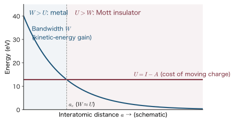
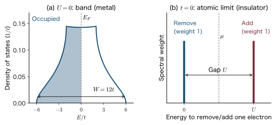
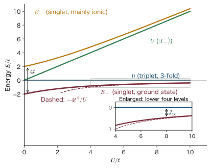
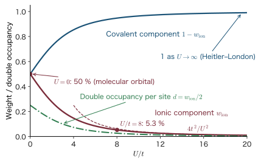
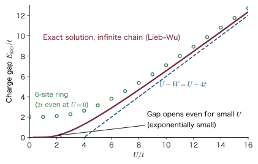
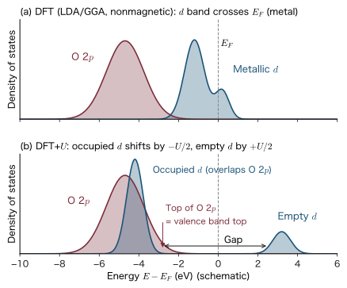

Chapter 28Electron–Electron Interaction — When the Predictions of Band Theory Fail: The Hubbard Model and Mott Insulators
In Chapter 16 we treated the electrons of a crystal as “individual electrons moving independently in an average potential,” and by simply filling the bands from the bottom we arrived at a rule for distinguishing metals from insulators. The rule is this: if the number of valence electrons per unit cell is odd, the material is always a metal, and if a band is only partly filled, the material is a metal. Na, Cu, and Al are metals, as the rule says, and Si and diamond are insulators, again as the rule says. But when we line up the monoxides of the iron-group transition metals, MnO, FeO, CoO, NiO, and CuO, the rule almost never works. In every one of them the $d$ band is only partly filled, so band theory answers “metal.” In reality, NiO is a transparent green insulator with a gap of about $4\,\mathrm{eV}$.
The cause of the failure is that band theory includes the Coulomb repulsion between electrons only as an “average.” When two electrons occupy a narrow $d$ orbital, an extra repulsion of several eV must be paid. If this cost is larger than the kinetic energy that the electrons gain by moving around in the crystal (the bandwidth $W$), each electron stays on its own atom, one per atom, and cannot move. This is a Mott insulator. In this chapter we proceed in the following order: experimental facts (the series of monoxides) → Mott's idea → the Hubbard model → exact solution for two sites → back to the lattice and the Mott insulator. The centerpiece is Section 28.5, where we solve the smallest model, two electrons on two atoms, as the diagonalization of a $4\times4$ matrix, without skipping a single line. From there we are led in one continuous line to the reason why a Mott insulator is antiferromagnetic (the exchange interaction $J_{\rm ex}=4t^2/U$).
This chapter is also an example showing that the idea of the “quasiparticle” introduced in Chapter 27 can fail to hold when the interaction is strong. For weak interactions the electron behaves as a quasiparticle that has become slightly heavier (the Fermi liquid of Section 15.9 in Chapter 15), but as the interaction grows, the weight of the quasiparticle decreases, and eventually the excitations that add or remove an electron split into two parts, the lower and upper Hubbard bands. In the second half we survey the charge-transfer classification that includes the O 2$p$ orbitals (Zaanen–Sawatzky–Allen), the treatment in first-principles calculations (DFT+$U$ and others), and other phenomena produced by electron correlation (heavy fermions, Stoner ferromagnetism, and the entrance to high-temperature superconductivity in cuprates). In the next chapter, Chapter 29, we replace the partner of the interaction by the lattice (phonons) and learn how an attraction arises between electrons.
- The band-theory rule for metals and insulators (Chapter 16), and the fact that it includes the repulsion between electrons only as an average
- How to count the $d$ electrons of the 3$d$ transition-metal monoxides from ScO to CuO, how they fill $t_{2g}$ and $e_g$, and the prediction of band theory versus reality
- Why the doubling of the unit cell by antiferromagnetic order (Slater's picture) cannot explain the insulating behavior of NiO and similar compounds
- Mott's thought experiment (a lattice of hydrogen atoms) and the competition between $U=I-A$ and the bandwidth $W$
- The meaning of each term of the Hubbard model $\Ham=-t\sum(c^\dagger_{i\sigma}c_{j\sigma}+\mathrm{h.c.})+U\sum n_{i\uparrow}n_{i\downarrow}$ and its two limits
- The exact solution of the two-site Hubbard model: choose a basis, write down the $4\times4$ matrix, separate it into singlet and triplet, and derive the eigenvalues $E_\pm=\frac U2\pm\sqrt{\frac{U^2}4+4t^2}$
- The covalent (bonding) and ionic components of the ground state, the double occupancy, the expansion for large $U$, and the antiferromagnetic exchange interaction $J_{\rm ex}=4t^2/U$
- The lower and upper Hubbard bands, the Mott gap $\approx U-W$, the Mott transition and the quasiparticle weight $Z$, and examples of real Mott transitions
- The distinction between Mott–Hubbard type and charge-transfer type (the Zaanen–Sawatzky–Allen diagram), which explains why the series of monoxides is “metallic in the first half and insulating in the second half”
- Why LDA and GGA fail for NiO and similar compounds, and the place of DFT+$U$, hybrid functionals, GW, and DFT+DMFT
28.1 Metals Predicted by Band Theory
28.1.1 Recalling the rule of Chapter 16
First, let us recall how band theory distinguished metals from insulators (Chapter 16, Section 16.7). In a crystal consisting of $N$ primitive cells, a single band has $N$ allowed values of $\kk$, and each has two spin states, up and down, so a single band holds exactly $2N$ electrons. If the number of valence electrons per unit cell is $n_v$, the total number of electrons is $n_vN$, and filling them from the bottom fills $n_vN/2N=n_v/2$ bands.
- If $n_v$ is odd, $n_v/2$ is a half-integer, and the last band is exactly half filled. In a half-filled band there are empty states just above the Fermi level $E_F$, so a small electric field shifts the electron distribution and a current flows. Therefore the material is necessarily a metal.
- If $n_v$ is even, an integer number of bands can be exactly filled. If there is a gap above them, the material is an insulator (semiconductor), and if the bands overlap, it is a metal.
“An odd number always gives a metal” was a theorem without exceptions (Theorem 16.2 of Chapter 16), as long as we count nonmagnetic, spin-degenerate bands with the periodicity of the original unit cell. The subject of this chapter is the case in which the premise of this theorem—that the electrons move independently of one another—breaks down.
What we want you to read off from Figure 28.1 is that (a) and (c) have exactly the same form: in both, “$E_F$ lies within a partially filled band.” As long as we think purely in the language of band theory, we find no reason why NiO should differ from Na.
Example 28.1: Number of valence electrons and parity for MnO, CoO, and NiO
The primitive cell of rock-salt-type MnO, CoO, and NiO contains one metal atom and one oxygen atom. As valence electrons, count the 3$d$ and 4$s$ electrons of the metal atom and the 2$s$ and 2$p$ electrons of oxygen. Find the number of valence electrons per unit cell, $n_v$, and its parity, and state what the rule of Chapter 16 predicts.
Solution. The electron configurations of the neutral atoms are Mn: [Ar]$3d^54s^2$, Co: [Ar]$3d^74s^2$, Ni: [Ar]$3d^84s^2$, and O: [He]$2s^22p^4$. The valence electrons are
$$ \text{Mn}:\ 5+2=7,\qquad \text{Co}:\ 7+2=9,\qquad \text{Ni}:\ 8+2=10,\qquad \text{O}:\ 2+4=6 $$Therefore, per unit cell,
$$ \mathrm{MnO}:\ n_v=7+6=13,\qquad \mathrm{CoO}:\ n_v=9+6=15,\qquad \mathrm{NiO}:\ n_v=10+6=16 $$The values for MnO and CoO are odd, so by Theorem 16.2 of Chapter 16 they are necessarily metals. The value for NiO is even, so the rule alone does not decide the matter, but if we fill the $d$ bands as in Figure 28.1 (c), the $e_g$ band is half filled, and a metal is predicted in this case as well.
∎ In reality, all three are insulators (the gaps are about $3.6$–$4\,\mathrm{eV}$ for MnO, about $2.5\,\mathrm{eV}$ for CoO, and about $4\,\mathrm{eV}$ for NiO). In particular, MnO and CoO are counterexamples to the theorem “an odd number always gives a metal” itself. Some part of the premise of the theorem must have broken down.
28.1.2 How the bands are filled in transition-metal oxides
Let us count the monoxides MO of the 3$d$ transition metals (M = Sc, Ti, …, Cu) in the ionic picture. Oxygen has a large electronegativity, so it receives two electrons from the metal atom and becomes O$^{2-}$ ($2s^22p^6$, closed shell). The metal becomes M$^{2+}$, losing the two $4s$ electrons and leaving $3d^n$. For Sc ($3d^14s^2$) this is $d^1$, for Ti $d^2$, and so on; for Cu ($3d^{10}4s^1$), Cu$^{2+}$ is $d^9$.
Restated in terms of bands, the oxygen 2$p$ band is full (the six electrons of O$^{2-}$), and above it the metal 3$d$ band is partially filled with $n$ electrons. The $d$ band has 5 orbitals × 2 spins = 10 sites. In an octahedral crystal field (Chapter 10, Section 10.1), the five $d$ orbitals split into the threefold degenerate $t_{2g}$ ($d_{xy},d_{yz},d_{zx}$; 6 sites) and, above it, the twofold degenerate $e_g$ ($d_{x^2-y^2},d_{3z^2-r^2}$; 4 sites). In the rock-salt structure, six oxygens surround each metal ion at the vertices of an octahedron, so this is exactly the situation here.
In a nonmagnetic band calculation (one that fills the up and down spins identically), the $d$ band can be exactly full and give an insulator only when the boundary of the filled bands falls exactly at a break in the number of sites. There are only two such breaks: 6 electrons, where $t_{2g}$ is full, and 10 electrons, where the whole $d$ band is full. Among $n=1,\dots,9$, only $n=6$ falls on a break ($t_{2g}^6$: the $t_{2g}$ band is full and the $e_g$ band is empty); in the remaining eight cases, either the $t_{2g}$ or the $e_g$ band is partially filled, so the material is necessarily a metal. Even for that $n=6$, the actual $t_{2g}$ and $e_g$ bands have widths and overlap (the splitting $10Dq$ between $e_g$ and $t_{2g}$ is the crystal-field splitting of Chapter 10, and in oxides it is about $1\,\mathrm{eV}$, comparable to the width of the $d$ band), so FeO ($d^6$) also becomes a metal in a nonmagnetic band calculation. In short, for every compound from ScO to CuO, band theory predicts a metal.
28.1.3 How band theory treats the repulsion between electrons
Then does band theory ignore the Coulomb repulsion between electrons? It does not. A first-principles band calculation (density functional theory) incorporates the average electrostatic potential created by all the other electrons (the Hartree potential), together with the effects of exchange and correlation as an average potential determined by the density alone, and solves the problem of a single electron moving independently in that potential. This is called the one-electron approximation or the mean-field approximation.
What is lost in the mean field is the correlation by which electrons move so as to avoid one another. For example, when an average of eight electrons occupy the $d$ orbitals of Ni, the mean field takes the view that there are eight at every instant. In reality, when an electron hops from one Ni to a neighboring Ni, there are moments when one becomes $d^7$ and the other $d^9$. On the $d^9$ side the electrons push against one another within the narrow $d$ orbital, and a repulsion far larger than the average value acts. This “price of charge fluctuation” never appears if we look only at averages. The series we examine in the next section is a group of materials in which this price plays the leading role.
Supplement: The term “strongly correlated”
Systems in which the correlation between electrons governs the physical properties are called strongly correlated electron systems. Typical examples are the oxides of the 3$d$ transition metals, the compounds of rare earths and actinides with 4$f$ and 5$f$ electrons (heavy-fermion systems), and molecular organic conductors. What they have in common is that the electrons occupy narrow orbitals ($d$, $f$, molecular orbitals) and hopping to the neighbor is small. In the language of the tight-binding approximation of Section 18.4 of Chapter 18, the hopping integral is small and the band is narrow. The narrower the band, the smaller the gain in kinetic energy, and the larger the effect of the interaction relative to it.
28.2 Transition-Metal Monoxides — From ScO to CuO
28.2.1 Lining up the series
If we line up the monoxides of the 3$d$ transition metals from Sc to Cu, the difference between the predictions of band theory and reality is apparent at a glance. We summarize them in Table 28.1 and Figure 28.2. As in Section 28.1.2, the number of $d$ electrons is the $d^n$ ($n=1,\dots,9$) of M$^{2+}$. The way the electrons fill the $t_{2g}$ and $e_g$ levels is written for the high-spin state, in which the spins are aligned as they are filled according to Hund's rules (Chapter 20, Section 20.4). It is known that M$^{2+}$ in MnO through NiO is in the high-spin state in every case.
| Material | $d^n$ | High-spin filling | $n_v$ (parity) | Band theory | Actual | Gap | Magnetic order ($T_N$) | Crystal structure |
|---|---|---|---|---|---|---|---|---|
| ScO | $d^1$ | $t_{2g}^{1}$ | 9 (odd) | Metal | No stable bulk phase. Listed as an example of band-theory counting | (rock-salt type assumed) | ||
| TiO | $d^2$ | $t_{2g}^{2}$ | 10 (even) | Metal | Metal (superconducting below ~1 K) | None | None | Rock-salt type, many vacancies |
| VO | $d^3$ | $t_{2g}^{3}$ | 11 (odd) | Metal | Metallic (or semiconducting, by composition) | None | None | Rock-salt type with many vacancies |
| CrO | $d^4$ | $t_{2g}^{3}e_g^{1}$ | 12 (even) | Metal | No stable bulk phase (reported in thin films). Listed as an example of band-theory counting | (rock-salt type assumed) | ||
| MnO | $d^5$ | $t_{2g}^{3}e_g^{2}$ | 13 (odd) | Metal | Insulator | about 3.6–4 eV | AF, 116 K (116–118 K) | Rock-salt type |
| FeO | $d^6$ | $t_{2g}^{4}e_g^{2}$ | 14 (even) | Metal | Insulator | about 2.4 eV (wide spread) | AF, about 198 K | Rock-salt type (Fe$_{1-x}$O) |
| CoO | $d^7$ | $t_{2g}^{5}e_g^{2}$ | 15 (odd) | Metal | Insulator | about 2.5 eV | AF, about 290 K | Rock-salt type |
| NiO | $d^8$ | $t_{2g}^{6}e_g^{2}$ | 16 (even) | Metal | Insulator | about 4–4.3 eV | AF, about 525 K | Rock-salt type |
| CuO | $d^9$ | (planar fourfold. One hole in the $x^2-y^2$ orbital) | 17 (odd). 34 (even) in the monoclinic cell (2 CuO) | Metal | Insulator | about 1.4 eV (1.2–1.7) | AF, about 230 K | Monoclinic (tenorite) |
A few remarks on reading the table.
- ScO and CrO: Sc strongly prefers to be trivalent (Sc$_2$O$_3$), and so does Cr (Cr$_2$O$_3$), so the divalent monoxides are not known as stable bulk crystals (for CrO, the rock-salt type has been reported only in thin films a few atomic layers thick on a substrate). They are listed in the table as examples of the count, “how would band theory count if a rock-salt monoxide existed?”
- TiO and VO: These are rock-salt type but contain about 15% vacancies on both the metal and the oxygen sites. They show metallic conduction, and TiO becomes superconducting at low temperature (below about 1 K). That the first two are metals agrees with the prediction of band theory.
- MnO through NiO: These are rock-salt-type insulators, and all are antiferromagnetic. Below the Néel temperature $T_N$, the spins of the metal ions are aligned within a (111) plane and point opposite to those in the neighboring (111) planes (type 2 antiferromagnetism, called AF-II; Figure 28.3). With the ordering, the lattice is slightly distorted (rhombohedral-like for MnO, NiO, and FeO, tetragonal-like for CoO). FeO can be obtained only as the nonstoichiometric compound Fe$_{1-x}$O (wüstite), which is deficient in Fe by a few percent.
- CuO: It is not rock-salt type but monoclinic (tenorite), with oxygen atoms arranged around Cu$^{2+}$ in planar fourfold coordination. The single $d^9$ hole enters the $x^2-y^2$-type orbital. The monoclinic primitive cell contains two CuO units, so the number of valence electrons is $2\times17=34$, an even number; however, the $x^2-y^2$-type orbital of each Cu is half-filled, so a nonmagnetic band calculation still gives a metal. Even when the number of electrons per unit cell is even, the system becomes a metal if bands overlap or are cut off partway (the second case of Section 28.1.1). CuO is counted not as a counterexample to “an odd number always means a metal,” but as an example in which the prediction “a metal, because the band is partly filled” fails. Magnetic order appears at about 230 K (commensurate antiferromagnetism below about 213 K).
- Gap and $T_N$: The gap is determined from optical absorption and from photoelectron spectroscopy and inverse photoemission spectroscopy, and $T_N$ from the magnetic susceptibility and neutron diffraction. The gap values vary with the measurement method and the sample (especially for FeO). Please regard the values in the table as indicating “roughly this size.” The $T_N$ of MnO was taken to be 116 K, the same as in Table 20.8 of Chapter 20 (116–118 K depending on the reference).
28.2.2 What is the problem? — Metals in the first half, insulators in the second half
The “band theory” column of Table 28.1 reads “metal” throughout. In reality, TiO and VO in the first half are metals, and MnO through CuO in the second half are insulators. Moreover, the gaps of the insulators in the second half are large, 1.4–4 eV, and many exceed that of Si (1.11 eV). A single crystal of NiO is green and transparent. This is not a discrepancy of the kind that “a small correction can fix.”
Example 28.2: Filling the $d^n$ shell and counting with spin-polarized bands
(1) Fill the $d$ electrons of Fe$^{2+}$ in FeO ($d^6$) and Co$^{2+}$ in CoO ($d^7$) into $t_{2g}$ and $e_g$ in the high-spin state. Find the spin $S$ of each ion. (2) Taking the antiferromagnetic order into account, fill the up-spin (majority-spin) and down-spin (minority-spin) bands separately at the position of each ion (the idea of a spin-polarized band calculation). The majority-spin $d$ band holds at most 5 electrons (3 in $t_{2g}$ and 2 in $e_g$). State how the minority-spin bands of FeO, CoO, MnO, and NiO are filled, and determine in which of them a gap can open in this picture.
Solution. (1) In the high-spin state, we first place one electron with parallel spin in each of the five orbitals (five majority-spin electrons), and from the sixth electron on we put the opposite spin into the lower $t_{2g}$.
$$ \mathrm{Fe^{2+}}\ (d^6):\ t_{2g}^{3\uparrow}e_g^{2\uparrow}\,t_{2g}^{1\downarrow},\qquad \mathrm{Co^{2+}}\ (d^7):\ t_{2g}^{3\uparrow}e_g^{2\uparrow}\,t_{2g}^{2\downarrow} $$The spin is half the number of unpaired electrons, so Fe$^{2+}$, with 5 up and 1 down, has $S=\frac12(5-1)=2$, and Co$^{2+}$ has $S=\frac12(5-2)=\frac32$.
(2) The majority-spin band is full, with 5 electrons, for every one of MnO through NiO. The filling of the minority-spin band is as follows.
- MnO ($d^5$): no minority-spin electrons. Both $t_{2g}^\downarrow$ and $e_g^\downarrow$ are empty. A gap can open between the full majority-spin band and the empty minority-spin band.
- FeO ($d^6$): one minority-spin electron goes into the three $t_{2g}^\downarrow$ orbitals (3 sites, not 6, because the spin is fixed). The $t_{2g}^\downarrow$ band is only $1/3$ filled, so the material is a metal.
- CoO ($d^7$): two minority-spin electrons go into the 3 sites of $t_{2g}^\downarrow$, giving $2/3$ filling and a metal.
- NiO ($d^8$): three minority-spin electrons fill $t_{2g}^\downarrow$ exactly, and $e_g^\downarrow$ is empty. A gap can open between $t_{2g}^\downarrow$ and $e_g^\downarrow$ (the crystal-field splitting).
∎ Even when spin polarization is included, FeO and CoO remain metals because a partially filled $t_{2g}^\downarrow$ band remains. A gap can open in MnO and NiO, but its size is determined by the exchange splitting and the crystal-field splitting (about 1 eV) and falls short of the measured value of about 4 eV. This is the content of the calculation by Kiyoyuki Terakura et al. described in Section 28.2.3 below.
28.2.3 History — de Boer and Verwey, Mott and Peierls
This problem is an old one. In 1937, right after the band theory of Bloch and Wilson had explained the distinction between metals and insulators, de Boer and Verwey pointed out that transition-metal oxides such as NiO are insulators even though their $d$ bands are only partially filled. At the same conference, Mott and Peierls sought the cause in the Coulomb repulsion between electrons. The idea is this: when an electron moves to a neighboring ion, the electrons at its destination repel one another strongly, so to avoid this each electron stays on its own ion. Mott formulated this idea in 1949 (Section 28.3), and Hubbard, Gutzwiller, and Junjiro Kanamori distilled it into the simplest model in 1963 (Section 28.4).
28.2.4 Is it because the unit cell doubles in the antiferromagnetic state? — Examining Slater's picture
MnO through NiO are all antiferromagnetic. One can then think of the following explanation: “In antiferromagnetic order, atoms with up spin and atoms with down spin alternate, so the magnetic unit cell is twice the original one. If the unit cell doubles, the number of valence electrons also doubles and becomes even, and the premise of the theorem in Chapter 16 (the periodicity of the original unit cell) also breaks down. The Brillouin zone is halved, the bands are folded back, and a gap opens at its boundary.” This is the mechanism that Slater considered in 1951, and a material that becomes an insulator by this mechanism is called a Slater insulator.
This explanation has two pieces of counterevidence.
- Counterevidence from calculation: Terakura et al. carried out, in 1984, systematic spin-polarized band calculations that incorporate antiferromagnetic order (the local spin density approximation, LSDA) for MnO, FeO, CoO, and NiO. Small gaps (a few times smaller than the measured values) opened in MnO and NiO, but FeO and CoO remained metallic. The reason is what we saw in Example 28.2.
- Counterevidence from experiment: MnO through NiO remain insulators even in the paramagnetic phase above $T_N$. Even when NiO goes above $T_N\approx525\,\mathrm{K}$, the gap hardly changes. If the Slater mechanism were at work, the gap should close at $T_N$, where the magnetic order disappears.
Therefore, magnetic order is not the cause of the gap. The cause is a much larger energy that acts regardless of whether the spins form an order—the cost of the Coulomb repulsion when an electron moves to a neighboring site. We examine this idea in the next section.
Example 28.3: What the insulating behavior of the paramagnetic phase tells us
The optical gap of NiO (about 4 eV) hardly changes across $T_N\approx525\,\mathrm{K}$. What can we say from this about the magnitude of the energy that opens the gap? Discuss by comparing with the thermal energy $k_BT_N$.
Solution. The thermal energy at $T_N$ is
$$ k_BT_N=8.617\times10^{-5}\,\mathrm{eV/K}\times525\,\mathrm{K}=0.0452\,\mathrm{eV}\approx45\,\mathrm{meV} $$The energy needed to destroy the magnetic order (the magnitude of the exchange interaction between spins) is of this order (several tens of meV). The gap, on the other hand, is about 4 eV, and
$$ \frac{4\,\mathrm{eV}}{0.045\,\mathrm{eV}}\approx90 $$times larger. If the gap arose from magnetic order, its magnitude should be of the order of the energy that creates the magnetic order, but the two differ by two orders of magnitude.
∎ What opens the gap is not magnetism (the direction of the spins) but the energy to move a charge, which is two orders of magnitude larger than the energy of the spin order. This “separation of the charge energy (eV) and the spin energy (several tens of meV)” is derived in the two-site model of Section 28.5 as the difference between $U$ and $J_{\rm ex}=4t^2/U$.
Try It Live: Adding $d$ electrons one at a time from ScO to CuO, and comparing prediction with reality
Click a material name in the strip above, or increase or decrease the number of $d$ electrons one at a time. Arrows then fill the $t_{2g}$ and $e_g$ boxes, as in Figure 28.2, and the following are displayed side by side: the number of valence electrons per unit cell $n_v$ and its parity, the band-theory count (O 2$p$ full + $n$ electrons in the 10 sites of the $d$ band = metal), and the actual properties (the same gap, $T_N$, and crystal structure as in Table 28.1). For MnO through NiO, the spin-polarized count of Example 28.2 and the ratio of the gap to $k_BT_N$ of Example 28.3 are also shown. In the Zaanen–Sawatzky–Allen diagram below (schematic; in the same orientation as Figure 28.18 of Section 28.7), you should also look at how the series moves from the upper left to the lower right. ScO and CrO are not placed in the diagram because no stable bulk phase is known for them.
28.3 Mott's Idea — Electrons Avoid One Another and Localize
28.3.1 A thought experiment: a lattice of hydrogen atoms
Mott showed the heart of the problem with the following thought experiment, which strips away the complexity of transition-metal oxides. Arrange hydrogen atoms on a simple cubic lattice and increase the lattice constant $a$. Each atom has one 1s electron, so the number of valence electrons per unit cell is $n_v=1$ (odd).
- The answer of band theory: The single band formed from the 1s orbitals is half filled. No matter how large $a$ is made, the bandwidth only becomes narrower, and the band remains “half filled.” Therefore band theory keeps answering that the system is a metal for any $a$.
- The answer of common sense: If $a$ is 1 m, this is a collection of neutral hydrogen atoms far apart from one another, and no current can possibly flow. For sufficiently large $a$ the system is an insulator.
It is clear which is correct. What, then, did band theory overlook?
28.3.2 Carrying charge costs $U$
Consider making a current flow from the state of Figure 28.4 (b). A current is a flow of charge, so some electron must move to a neighboring atom. The state after the electron has moved is, as in (c), a pair consisting of H$^+$, which has no electron, and H$^-$, which has two electrons. Let us account for the energy of this pair.
Derivation: The energy of moving an electron to a neighbor, $U=I-A$
Step 1: Start from two neutral atoms, H + H. Remove one electron from the left atom. The energy required is the ionization energy $I$ of the hydrogen atom:
$$ \mathrm{H}\ \to\ \mathrm{H}^++\mathrm{e}^-\qquad \Delta E_1=+I $$Step 2: Attach the removed electron to the neutral atom on the right. The amount by which the energy of the neutral atom drops on receiving the electron is the electron affinity $A$:
$$ \mathrm{H}+\mathrm{e}^-\ \to\ \mathrm{H}^-\qquad \Delta E_2=-A $$Step 3: Adding the two, the energy change of H + H → H$^+$ + H$^-$ is
$$ \Delta E=\Delta E_1+\Delta E_2=I-A $$(If the atoms are sufficiently far apart, the Coulomb attraction between H$^+$ and H$^-$ can be neglected.) We write this as $U$:
∎ $U$ can be read as “the extra Coulomb repulsion energy incurred when two electrons occupy the same atom, compared with when they sit one each on separate atoms.” Indeed, $I$ is the energy to remove an electron from an atom with one electron, and $A$ is the gain when a second electron is added; their difference arises from the repulsion that the second electron feels from the first.
Example 28.4: $U$ for hydrogen
The ionization energy of the hydrogen atom is $I=13.60\,\mathrm{eV}$ and its electron affinity is $A=0.75\,\mathrm{eV}$. Find $U$ and compare it with the room-temperature thermal energy $k_BT=25.85\,\mathrm{meV}$.
Solution. From Eq. \eqref{eq:28-UIA},
$$ U=I-A=13.60\,\mathrm{eV}-0.75\,\mathrm{eV}=12.85\,\mathrm{eV} $$The ratio to the thermal energy is
$$ \frac{U}{k_BT}=\frac{12.85\,\mathrm{eV}}{0.02585\,\mathrm{eV}}=497 $$∎ It is about 500 times larger. In terms of the Boltzmann factor, the probability that thermal excitation creates an H$^+$H$^-$ pair is of order $\ee^{-497}$, which is effectively zero. The electrons stay one each on atoms far apart from one another, and no carriers of charge exist. The electron affinity of H$^-$ is as small as $0.75\,\mathrm{eV}$ because the second electron feels a strong repulsion from the first and is only weakly bound.
28.3.3 The competition between $U$ and the bandwidth $W$
When the atoms are brought closer, the 1s orbitals overlap and the electrons can hop to neighboring atoms. The strength of hopping is expressed by the hopping integral $t$ of the tight-binding approximation (Chapter 18, Section 18.4; in Chapter 18 it was written $\gamma$), and the width of the 1s band becomes $W=2zt$ ($z$ is the number of nearest-neighbor atoms). The overlap of orbitals decreases exponentially with interatomic distance, so $W$ also decreases rapidly with $a$. On the other hand, $U$ is a property inside a single atom, so it hardly depends on $a$.
The energy gained by an electron hopping to a neighbor is the kinetic-energy gain from the electron occupying states near the bottom of the band, and its magnitude is of order $W$. When electrons hop, there are moments, with a certain probability, in which two electrons occupy the same atom, and each time $U$ is paid. If $W$ is larger than $U$, it is advantageous to hop even at the price of $U$, and the system is a metal. If $U$ is larger than $W$, it is advantageous to stop hopping and stay on each atom, and the system is an insulator. This insulator is called a Mott insulator. Figure 28.5 shows this competition schematically.

Derivation: The crudest estimate of “which is larger, $W$ or $U$”
Approximate the half-filled band by a flat density of states of width $W$. The density of states per site per spin is $N=1/W$, since there is one state within the width $W$. Take the center of the band as the origin of energy.
Step 1: Kinetic energy of independent electrons (metal). At half filling, the electrons of each spin fill the band from $-W/2$ to $0$. The energy per site per spin is
$$ \int_{-W/2}^{0}E\,\frac{1}{W}\,\dd E=\frac{1}{W}\left[\frac{E^2}{2}\right]_{-W/2}^{0}=\frac{1}{W}\left(0-\frac{W^2}{8}\right)=-\frac{W}{8} $$There are two spins, so the energy per site is $2\times(-W/8)=-W/4$.
Step 2: The cost of repulsion for independent electrons. If the electrons move independently without avoiding one another, the probability that an up-spin electron is at a given site is $\langle n_\uparrow\rangle=\frac12$, and the probability that a down-spin electron is there is also $\langle n_\downarrow\rangle=\frac12$. Since the two are independent, the probability that two electrons are at the same site (the double occupancy) is $\frac12\times\frac12=\frac14$. $U$ is paid each time, so the cost is $U/4$ per site.
Step 3: Compare. The energy per site of the metal (independent electrons) is
$$ E_{\rm metal}=-\frac{W}{4}+\frac{U}{4}=\frac{U-W}{4} $$In the state in which one electron stays on each atom, there is neither a kinetic-energy gain nor a cost of double occupancy, so $E_{\rm loc}=0$ (the small interaction between spins is treated in Section 28.5). $E_{\rm metal}\lt E_{\rm loc}$ holds when
$$ \frac{U-W}{4}\lt0\quad\Longleftrightarrow\quad U\lt W $$∎ The boundary between metal and insulator lies at $U\approx W$. This estimate compares only two states, “a state that does not avoid double occupancy at all” and “a state that avoids it completely,” so the value of the boundary is crude. In reality the electrons can move while partially avoiding double occupancy, so the metal survives up to somewhat larger $U$ (the Brinkman–Rice argument of Section 28.6).
The coefficient of the critical value $U_c$ (how many times $W$ it is) changes with the model (the form of the density of states, the lattice) and with the method of approximation. In this chapter we will meet the values $U_c=2W$ in the Gutzwiller approximation with a flat density of states (Exercise 28.7), about $1.7W$ in the Gutzwiller approximation with a semicircular density of states, and about $1.5W$ in dynamical mean-field theory. All of them are restatements of the same conclusion, “the rule of thumb is $U\sim W$,” and there is no need to dwell on the differences in the coefficient (the “Caution” in Section 28.6.2).
Example 28.5: $U$ for the Ni$^{2+}$ atom and $U$ in the solid
The second ionization energy of Ni (Ni$^+$ → Ni$^{2+}$) is $18.17\,\mathrm{eV}$, and the third ionization energy (Ni$^{2+}$ → Ni$^{3+}$) is $35.19\,\mathrm{eV}$. Estimate, using the values for isolated ions, the energy of the reaction $d^8+d^8\to d^7+d^9$ in which an electron is transferred in NiO from one Ni$^{2+}$ ($d^8$) to another Ni$^{2+}$. Compare it with the value $U\approx7$–$8\,\mathrm{eV}$ actually estimated for NiO, and state the cause of the difference.
Solution. We split the reaction $2\,\mathrm{Ni^{2+}}\to\mathrm{Ni^{3+}}+\mathrm{Ni^{+}}$ into two steps. Removing an electron from one Ni$^{2+}$ requires the third ionization energy $I_3$:
$$ \mathrm{Ni^{2+}}\to\mathrm{Ni^{3+}}+\mathrm{e}^-\qquad \Delta E_1=+I_3=35.19\,\mathrm{eV} $$The process in which the other Ni$^{2+}$ receives that electron is the reverse of the second ionization, so the energy decreases by $I_2$:
$$ \mathrm{Ni^{2+}}+\mathrm{e}^-\to\mathrm{Ni^{+}}\qquad \Delta E_2=-I_2=-18.17\,\mathrm{eV} $$Altogether,
$$ U_{\rm atom}=I_3-I_2=35.19-18.17=17.02\,\mathrm{eV} $$∎ The value for isolated ions is about $17\,\mathrm{eV}$, more than twice the value of about $7$–$8\,\mathrm{eV}$ in the solid. The reason is that in the solid, when Ni$^{3+}$ and Ni$^+$ are formed, the electron clouds of the surrounding O$^{2-}$ ions and the other ions polarize and screen the extra charge, lowering the energy substantially. Even so, the value in the solid is equal to or larger than the width of the $d$ band of NiO (a few eV). $U$ must be treated not as an “atomic value” but as a value screened inside the solid. This leads to the question of how to determine $U$ in the first-principles calculations of Section 28.8.
Supplement: The Mott transition in the impurity band of a semiconductor
The thought experiment of a lattice of hydrogen atoms is in fact realized in doped semiconductors. When P is introduced into Si, an electron is bound around each P in a hydrogen-like orbital (effective Bohr radius $a_H\approx1.7$–$2\,\mathrm{nm}$; Table 36.2 of Chapter 36 gives $1.7\,\mathrm{nm}$) (Chapter 17, Section 17.6). As the P concentration $n$ is raised, the distance between donors shrinks, which amounts to making the lattice constant $a$ of the “lattice of hydrogen atoms” smaller, and at a certain concentration $n_c$ the system changes from an insulator to a metal. This transition is treated in detail in Chapter 36 (Section 36.6) (Mott's criterion $n_c^{1/3}a_H\simeq0.25$). We compare them once more in Section 28.6.
28.4 The Hubbard Model
28.4.1 Writing down the model
The Hubbard model is Mott's idea cast in the smallest form that can be calculated. It was proposed, almost simultaneously and independently, in 1963 by Hubbard to treat the correlation of $d$ electrons in transition metals, by Gutzwiller to treat ferromagnetism in metals, and by Kanamori to treat ferromagnetism and electron correlation. We assume that each site (atom) $i$ of the lattice has only one orbital, and denote the spin of an electron occupying it by $\sigma=\uparrow,\downarrow$.
Definition: The Hubbard model
- $c^\dagger_{i\sigma}$ (read “c-dagger”): the operator that creates one electron of spin $\sigma$ at site $i$ (the creation operator). $c_{i\sigma}$: the operator that removes one electron of spin $\sigma$ from site $i$ (the annihilation operator).
- $n_{i\sigma}=c^\dagger_{i\sigma}c_{i\sigma}$: the number operator that counts the number (0 or 1) of electrons of spin $\sigma$ at site $i$.
- $\sum_{\langle ij\rangle}$: the sum over pairs $(i,j)$ of nearest-neighbor sites, adding each pair once.
- $t\gt0$: the hopping integral. $U\gt0$: the on-site Coulomb repulsion when two electrons occupy the same site.
The two terms in the parentheses of the first term are Hermitian conjugates of each other, so it is also written $c^\dagger_{i\sigma}c_{j\sigma}+\mathrm{h.c.}$ (h.c. stands for Hermitian conjugate).
How to read creation and annihilation operators was introduced in Chapter 27, Section 27.4. All we need here is to read a product of operators from the right, in order.
- $c^\dagger_{i\sigma}c_{j\sigma}$: first $c_{j\sigma}$ removes the electron of spin $\sigma$ at site $j$, and then $c^\dagger_{i\sigma}$ creates an electron of the same spin at site $i$. That is, it represents the process in which an electron hops from $j$ to $i$. The coefficient $-t$ expresses that the energy is lowered by hopping (the electron gains from the overlap of the orbitals). The spin does not change in hopping.
- $Un_{i\uparrow}n_{i\downarrow}$: $n_{i\uparrow}n_{i\downarrow}$ equals $1\times1=1$ only when site $i$ holds both an up-spin and a down-spin electron, and is 0 otherwise. This term therefore adds $U$ for each doubly occupied site. Two electrons of the same spin cannot enter the same orbital because of the Pauli principle, so a double occupancy is always an $\uparrow\downarrow$ pair.
Of the Coulomb repulsion, only the part $U$ within the same site is kept, and the repulsion with neighboring sites and the long-range part are discarded. The idea is that the long-range part is screened and weakened by the other electrons (Chapter 21, Section 21.3), whereas the repulsion within the same atom cannot be fully screened and remains.
Notation: $t$, $W$, $E$, and $J_{\rm ex}$ in this chapter
- $t$ is the hopping integral (an energy). Time is hardly used in this chapter, but when it is used we say “time” in words. In the tight-binding approximation of Chapter 18 the same quantity was written $\gamma$.
- $W$ is the bandwidth (the energy difference from the bottom to the top of the band). In Section 36.6.4 of Chapter 36 the same quantity is written $B$.
- In Part V the one-electron energy is written $E(\kk)$ (the same as $\epsilon_\kk$ in Chapters 15–18).
- In this chapter the exchange interaction is written with the convention $\Ham_{\rm eff}=J_{\rm ex}\,\bm S_1\cdot\bm S_2$ ($J_{\rm ex}\gt0$ is antiferromagnetic). Chapter 20 uses the same symbol $J_{\rm ex}$ with a different convention, $-2J_{\rm ex}\bm S_1\cdot\bm S_2$, so the correspondence is established in the box of Section 28.5.5.
- The charge-transfer energy is always written with a subscript, $\Delta_{\rm CT}$ (distinct from the superconducting gap $\Delta$ of Chapter 37). The quasiparticle weight $Z$ is the same as the renormalization factor of Section 27.2 of Chapter 27.
28.4.2 The four states of one site
The smallest building block of the Hubbard model is a single site. One orbital has only four states: no electron, one up-spin electron, one down-spin electron, and two electrons, up and down (Figure 28.6). For $t=0$, the energy of each is determined by $Un_\uparrow n_\downarrow$ and is $0,\,0,\,0,\,U$.
Example 28.6: The chemical potential of one site and half filling
(This example uses the grand canonical distribution of statistical mechanics—the distribution of a system in contact with a bath that exchanges not only heat but also particles. Only the fact that the weight of a state is $\ee^{-\beta(E-\mu N)}$ is used, so a first-time reader may read only the conclusion, “$\mu=U/2$ is the center of the gap,” and move on. The Fermi distribution $f(E)$ is also derived from the same weight.)
One site is in contact with a heat bath and a particle bath at temperature $T$ ($t=0$). From the weights $\ee^{-\beta(E-\mu N)}$ ($\beta=1/k_BT$) of the four states in Figure 28.6, find the average number of electrons $\langle N\rangle$. Find the $\mu$ at which $\langle N\rangle=1$ (half filling), and state its meaning.
Solution. The weights of the four states are $1,\ \ee^{\beta\mu},\ \ee^{\beta\mu},\ \ee^{-\beta(U-2\mu)}$, so the partition function is
$$ \Xi=1+2\ee^{\beta\mu}+\ee^{-\beta(U-2\mu)} $$The average number of electrons is obtained by multiplying the number of electrons in each state by its weight, summing, and dividing by $\Xi$:
$$ \langle N\rangle=\frac{0\cdot1+1\cdot2\ee^{\beta\mu}+2\cdot\ee^{-\beta(U-2\mu)}}{1+2\ee^{\beta\mu}+\ee^{-\beta(U-2\mu)}} $$Setting $\langle N\rangle=1$ and clearing the denominator gives
$$ 2\ee^{\beta\mu}+2\ee^{-\beta(U-2\mu)}=1+2\ee^{\beta\mu}+\ee^{-\beta(U-2\mu)} $$Subtracting $2\ee^{\beta\mu}$ from both sides and moving $\ee^{-\beta(U-2\mu)}$ to the other side, we obtain
$$ \ee^{-\beta(U-2\mu)}=1\quad\Longleftrightarrow\quad U-2\mu=0\quad\Longleftrightarrow\quad\mu=\frac{U}{2} $$∎ Regardless of the temperature, the site is half filled at $\mu=U/2$. At this value the empty state ($E-\mu N=0$) and the doubly occupied state ($U-2\mu=0$) have the same weight, and the energy to remove one electron ($1\to0$), $0-(-\mu)=U/2$, equals the energy to add one electron ($1\to2$), $(U-2\mu)-(-\mu)=U/2$. The chemical potential $\mu$ lies exactly midway between the energy to remove an electron and the energy to add one, that is, at the center of the gap of width $U$ (Figure 28.7 (b)).
28.4.3 Two limits — $U=0$ and $t=0$
The Hubbard model can be solved immediately in two limits.
(1) $U=0$: the band limit. Without interaction, the Hubbard model is precisely the tight-binding approximation. For a simple cubic lattice (lattice constant $a$, nearest neighbors $z=6$),
(this is the formula of Section 18.4.3 of Chapter 18 with $\alpha=0$ and $\gamma=t$). Since $\kk$ takes the minimum value $-6t$ at the $\Gamma$ point and the maximum value $+6t$ at the $R$ point, the width is $12t$. In Chapter 18 we derived it from the Bloch sum; here we check the one-dimensional case in the language of creation and annihilation operators.
Derivation: Diagonalizing the Hubbard model with $U=0$ on a one-dimensional chain
Consider a chain of $N$ sites with spacing $a$ (periodic boundary conditions), and fix one spin $\sigma$ (the spin does not change in a hop, so each spin can be solved separately). The hopping term is
$$ \Ham_t=-t\sum_{j=1}^{N}\left(c^\dagger_{j}c_{j+1}+c^\dagger_{j+1}c_{j}\right) $$Step 1: Introduce the wavenumber operators. Define the operator that creates one electron in a Bloch wave as
$$ c^\dagger_{k}=\frac{1}{\sqrt N}\sum_{j=1}^{N}\ee^{ikja}c^\dagger_{j},\qquad k=\frac{2\pi m}{Na}\ (m=0,1,\dots,N-1) $$(the same form as the Bloch sum of Chapter 16). The periodic boundary condition is $c_{N+1}=c_1$ (the neighbor of site $N$ is site 1), which requires $\ee^{ik(N+1)a}=\ee^{ika}$, that is, $\ee^{ikNa}=1$, so $k$ is restricted to integer multiples of $2\pi/Na$ as above. Solving the definition in reverse gives $c^\dagger_j=\frac{1}{\sqrt N}\sum_k\ee^{-ikja}c^\dagger_k$, and its Hermitian conjugate is $c_j=\frac{1}{\sqrt N}\sum_k\ee^{ikja}c_k$. That the definition can be inverted in this way is confirmed from $\sum_{j=1}^{N}\ee^{i(k-k')ja}=N\delta_{kk'}$ (for $k\ne k'$ the sum of the geometric series is 0) and from the same-form relation $\sum_k\ee^{ik(j'-j)a}=N\delta_{jj'}$. Indeed, substituting the definition into the right-hand side gives
$$ \frac{1}{\sqrt N}\sum_k\ee^{-ikja}c^\dagger_k=\frac1N\sum_{j'}\Big[\sum_k\ee^{ik(j'-j)a}\Big]c^\dagger_{j'}=\frac1N\sum_{j'}N\delta_{jj'}\,c^\dagger_{j'}=c^\dagger_j $$as claimed.
Step 2: Substitute. The first term is
$$ \sum_{j}c^\dagger_jc_{j+1}=\sum_j\frac{1}{N}\sum_{k,k'}\ee^{-ikja}\ee^{ik'(j+1)a}c^\dagger_kc_{k'}=\sum_{k,k'}\ee^{ik'a}\left[\frac1N\sum_j\ee^{i(k'-k)ja}\right]c^\dagger_kc_{k'} $$The square bracket is $\delta_{kk'}$, so only $k'=k$ survives:
$$ \sum_{j}c^\dagger_jc_{j+1}=\sum_k\ee^{ika}c^\dagger_kc_k $$The second term is the Hermitian conjugate of the first, so it is $\sum_k\ee^{-ika}c^\dagger_kc_k$.
Step 3: Combine.
$$ \Ham_t=-t\sum_k\left(\ee^{ika}+\ee^{-ika}\right)c^\dagger_kc_k=\sum_k\left(-2t\cos ka\right)n_k $$Here $n_k=c^\dagger_kc_k$ is the number operator that counts the electrons (0 or 1) in the Bloch state of wavenumber $k$ (spin $\sigma$); it is $n_{i\sigma}$ with the site replaced by the wavenumber.
∎ The energy of the state of wavenumber $k$ is $E(k)=-2t\cos ka$, and the width is $W=4t=2zt$ ($z=2$). Since the Hamiltonian has become a sum of the $n_k$, the states can be filled independently for each $k$. This is exactly the band-theory operation of “filling the one-electron states from the bottom.” For the three-dimensional simple cubic lattice as well, carrying out the same calculation for the three directions gives Eq. \eqref{eq:28-tb}.
(2) $t=0$: the atomic limit. Without hopping, each site is independently in one of the four states of Figure 28.6. The ground state at half filling (an average of one electron per site) is the state with exactly one electron on every site, because creating a doubly occupied site costs an energy $U$. Since the energy of each site's spin is the same whether it points up or down, the ground state of $N$ sites is $2^N$-fold degenerate. The difference between the energy needed to remove one electron and the energy needed to add one is $U$, so the system is an insulator with a gap of $U$ for charge excitations. Figure 28.7 shows the two limits side by side.

The two limits give opposite answers (metal and insulator). What happens in between is determined by the ratio of the two energies $W$ (or $t$) and $U$. The quantities contained in the model are only $t$, $U$, and the number of electrons per site (the filling) $n$, so the properties of the Hubbard model are determined by just two parameters, $U/W$ (or $U/t$) and $n$, because we can simply take $t$ as the unit of energy.
Example 28.7: Tight-binding bandwidth
(1) For a simple cubic lattice with $t=0.4\,\mathrm{eV}$, find the bandwidth $W$. (2) For a one-dimensional chain with $t=1\,\mathrm{eV}$, find $W$. (3) If $U=8\,\mathrm{eV}$ in (1), what is $U/W$? On which side does it fall in the rough criterion of Section 28.3?
Solution. (1) The number of nearest neighbors is $z=6$, so from Eq. \eqref{eq:28-tb}
$$ W=2zt=2\times6\times0.4\,\mathrm{eV}=4.8\,\mathrm{eV} $$(2) In one dimension $z=2$, so $W=2\times2\times1\,\mathrm{eV}=4\,\mathrm{eV}$ (this agrees with the width $4t$ of $E(k)=-2t\cos ka$ in the derivation).
(3) $U/W=8/4.8=1.67$.
∎ Since $U\gt W$, it lies on the Mott-insulator side in the rough criterion of Section 28.3. Even for the same $t$, the larger the number of nearest neighbors $z$, the larger $W$ becomes and the more easily the system becomes a metal. The width of the $d$ band of a 3$d$ transition-metal oxide is about 1–3 eV and $U$ is a few eV, so $U/W$ is around 1 or larger, right near the boundary between metal and insulator. This is why metal–insulator transitions are found in many transition-metal oxides.
28.5 Exact Solution of the Two-Site Hubbard Model
This section is the heart of the chapter. We solve the Hubbard model with two atoms (sites) and two electrons without any approximation. It is the simplest possible model of the hydrogen molecule H$_2$, and the properties of a crystalline Mott insulator—charge excitations cost a high energy of order $U$, while spin excitations cost a low energy of order $4t^2/U$—all appear in this small model. The calculation requires nothing more than the diagonalization of a $4\times4$ matrix. The same model is also solved in Chapter 59, Section 59.5 of the companion volume “Quantum Mechanics,” but here we derive everything on the spot, from the notation conventions to the final expansion.
28.5.1 The model and the counting of states
Each of sites 1 and 2 has one orbital, and the hopping integral between them is $t$. In Eq. \eqref{eq:28-hubbard} the pair $\langle ij\rangle$ is only the single pair $(1,2)$, so
There are four sites that an electron can occupy, $1\uparrow,1\downarrow,2\uparrow,2\downarrow$, and there are $\binom42=6$ ways to put two electrons into them. The $z$ component $S_z$ of the total spin (half the difference between the number of up spins and the number of down spins) is changed neither by hopping nor by the $U$ term, so the problem can be solved separately for each value of $S_z$.
- $S_z=+1$: only one state, $c^\dagger_{1\uparrow}c^\dagger_{2\uparrow}\ket{0}$. Even if an electron tries to hop, there is already an electron with the same spin at the destination (forbidden by the Pauli principle), so it cannot hop, and there is no double occupancy either. The energy is $0$.
- $S_z=-1$: only one state, $c^\dagger_{1\downarrow}c^\dagger_{2\downarrow}\ket{0}$. Likewise the energy is $0$.
- $S_z=0$: the remaining four states. This is the main part.
28.5.2 Choosing the basis and writing down the matrix
The creation operators of fermions change sign when the order in which they are written is interchanged ($c^\dagger_ac^\dagger_b=-c^\dagger_bc^\dagger_a$). Therefore, unless we fix an ordering convention for writing states in terms of operators, the signs of the matrix elements are not determined.
Notation: How to write the two-electron states
Write the creation operator of the up spin on the left and that of the down spin on the right. With this convention we define the four states with $S_z=0$ as
$$ \ket{A}=c^\dagger_{1\uparrow}c^\dagger_{2\downarrow}\ket{0},\qquad \ket{B}=c^\dagger_{2\uparrow}c^\dagger_{1\downarrow}\ket{0},\qquad \ket{D_1}=c^\dagger_{1\uparrow}c^\dagger_{1\downarrow}\ket{0},\qquad \ket{D_2}=c^\dagger_{2\uparrow}c^\dagger_{2\downarrow}\ket{0} $$The state $\ket{A}$ is “↑ on site 1 and ↓ on site 2,” $\ket{B}$ is “↑ on site 2 and ↓ on site 1,” and $\ket{D_1}$ and $\ket{D_2}$ are the doubly occupied states of sites 1 and 2, respectively. We call $\ket{A},\ket{B}$ covalent states and $\ket{D_1},\ket{D_2}$ ionic states (for H$_2$ they correspond to H$^-$H$^+$). The four states are mutually orthogonal and have length 1.
If we choose a different convention (for example, “operators of site 1 on the left”), the sign of $\ket{B}$ is reversed, and the signs of some of the matrix elements change. However, the eigenvalues do not depend on the convention (Exercise 28.2).
The only rules we use in the calculation are the anticommutation relations of Chapter 27, Section 27.4:
Here $a,b$ are the names of sites (such as $1\uparrow$). From the first relation we obtain $c_ac^\dagger_a=1-c^\dagger_ac_a$ (this multiplies by 1 if the site $a$ is empty and by 0 if it is filled), and, for $a\ne b$, $c_ac^\dagger_b=-c^\dagger_bc_a$ (interchanging the order reverses the sign). Also, $c_a\ket{0}=0$ (an electron cannot be removed from an empty site). Setting $a=b$ in the second relation gives $c^\dagger_ac^\dagger_a=0$, which is the Pauli principle (two electrons cannot be created in the same site).
Derivation 1: Applying the hopping term to $\ket{A}$
We apply the four terms of $\Ham_t=-t\sum_\sigma(c^\dagger_{1\sigma}c_{2\sigma}+c^\dagger_{2\sigma}c_{1\sigma})$ in turn to $\ket{A}=c^\dagger_{1\uparrow}c^\dagger_{2\downarrow}\ket{0}$.
(i) $c^\dagger_{1\uparrow}c_{2\uparrow}\ket{A}$: There is no ↑ electron on site 2 of $\ket{A}$, so none can be removed. If we move $c_{2\uparrow}$ to the right, the sites differ from those of $c^\dagger_{1\uparrow}$ and $c^\dagger_{2\downarrow}$, so the sign changes only twice, and finally $c_{2\uparrow}\ket{0}=0$ appears. Hence the result is $0$.
(ii) $c^\dagger_{2\uparrow}c_{1\uparrow}\ket{A}$:
$$ c^\dagger_{2\uparrow}c_{1\uparrow}c^\dagger_{1\uparrow}c^\dagger_{2\downarrow}\ket{0} =c^\dagger_{2\uparrow}\left(1-c^\dagger_{1\uparrow}c_{1\uparrow}\right)c^\dagger_{2\downarrow}\ket{0} =c^\dagger_{2\uparrow}c^\dagger_{2\downarrow}\ket{0}-c^\dagger_{2\uparrow}c^\dagger_{1\uparrow}c_{1\uparrow}c^\dagger_{2\downarrow}\ket{0} $$In the second term, $c_{1\uparrow}c^\dagger_{2\downarrow}\ket{0}=-c^\dagger_{2\downarrow}c_{1\uparrow}\ket{0}=0$. Therefore
$$ c^\dagger_{2\uparrow}c_{1\uparrow}\ket{A}=c^\dagger_{2\uparrow}c^\dagger_{2\downarrow}\ket{0}=\ket{D_2} $$(The ↑ on site 1 has moved to site 2, and site 2 has become doubly occupied.)
(iii) $c^\dagger_{1\downarrow}c_{2\downarrow}\ket{A}$: Moving $c_{2\downarrow}$ to the right of $c^\dagger_{1\uparrow}$ changes the sign once:
$$ c^\dagger_{1\downarrow}c_{2\downarrow}c^\dagger_{1\uparrow}c^\dagger_{2\downarrow}\ket{0} =-c^\dagger_{1\downarrow}c^\dagger_{1\uparrow}c_{2\downarrow}c^\dagger_{2\downarrow}\ket{0} =-c^\dagger_{1\downarrow}c^\dagger_{1\uparrow}\left(1-c^\dagger_{2\downarrow}c_{2\downarrow}\right)\ket{0} =-c^\dagger_{1\downarrow}c^\dagger_{1\uparrow}\ket{0} $$Reordering so that ↑ is on the left, as the convention requires, changes the sign once more:
$$ -c^\dagger_{1\downarrow}c^\dagger_{1\uparrow}\ket{0}=+c^\dagger_{1\uparrow}c^\dagger_{1\downarrow}\ket{0}=\ket{D_1} $$(iv) $c^\dagger_{2\downarrow}c_{1\downarrow}\ket{A}$: There is no ↓ on site 1, so the result is $0$.
Summary: Multiplying by the coefficient $-t$, we obtain
$$ \Ham_t\ket{A}=-t\left(\ket{D_1}+\ket{D_2}\right) $$∎ From $\ket{A}$, either the ↑ hops to the right or the ↓ hops to the left, so there are two routes, which lead to the two ionic states.
Derivation 1 (continued): Applying the hopping term to $\ket{B}$
In $\ket{B}=c^\dagger_{2\uparrow}c^\dagger_{1\downarrow}\ket{0}$ there is an ↑ on site 2 and a ↓ on site 1. Of the four terms, $c^\dagger_{2\uparrow}c_{1\uparrow}$, which contains $c_{1\uparrow}$, and $c^\dagger_{1\downarrow}c_{2\downarrow}$, which contains $c_{2\downarrow}$, have no electron to remove and therefore vanish for the same reason as (i) and (iv). We compute the remaining two terms.
(v) The ↑ hops from 2 to 1, $c^\dagger_{1\uparrow}c_{2\uparrow}\ket{B}$:
$$ c^\dagger_{1\uparrow}c_{2\uparrow}c^\dagger_{2\uparrow}c^\dagger_{1\downarrow}\ket{0}=c^\dagger_{1\uparrow}\left(1-c^\dagger_{2\uparrow}c_{2\uparrow}\right)c^\dagger_{1\downarrow}\ket{0}=c^\dagger_{1\uparrow}c^\dagger_{1\downarrow}\ket{0}-c^\dagger_{1\uparrow}c^\dagger_{2\uparrow}c_{2\uparrow}c^\dagger_{1\downarrow}\ket{0} $$In the second term, $c_{2\uparrow}c^\dagger_{1\downarrow}\ket{0}=-c^\dagger_{1\downarrow}c_{2\uparrow}\ket{0}=0$, so $c^\dagger_{1\uparrow}c_{2\uparrow}\ket{B}=c^\dagger_{1\uparrow}c^\dagger_{1\downarrow}\ket{0}=\ket{D_1}$.
(vi) The ↓ hops from 1 to 2, $c^\dagger_{2\downarrow}c_{1\downarrow}\ket{B}$: Moving $c_{1\downarrow}$ to the right of $c^\dagger_{2\uparrow}$ changes the sign once:
$$ c^\dagger_{2\downarrow}c_{1\downarrow}c^\dagger_{2\uparrow}c^\dagger_{1\downarrow}\ket{0}=-c^\dagger_{2\downarrow}c^\dagger_{2\uparrow}c_{1\downarrow}c^\dagger_{1\downarrow}\ket{0}=-c^\dagger_{2\downarrow}c^\dagger_{2\uparrow}\left(1-c^\dagger_{1\downarrow}c_{1\downarrow}\right)\ket{0}=-c^\dagger_{2\downarrow}c^\dagger_{2\uparrow}\ket{0} $$Reordering so that ↑ is on the left, as the convention requires, changes the sign once more, and $-c^\dagger_{2\downarrow}c^\dagger_{2\uparrow}\ket{0}=+c^\dagger_{2\uparrow}c^\dagger_{2\downarrow}\ket{0}=\ket{D_2}$.
Summary:
$$ \Ham_t\ket{B}=-t\left(\ket{D_1}+\ket{D_2}\right) $$∎ This has exactly the same form as for $\ket{A}$. From $\ket{B}$ as well, either the ↑ hops to the left or the ↓ hops to the right, so there are two routes, which lead to the two ionic states.
Example 28.8: Applying the hopping term to $\ket{D_1}$ and $\ket{D_2}$
Using the same procedure as in Derivation 1, calculate $\Ham_t\ket{D_1}$ (where $\ket{D_1}=c^\dagger_{1\uparrow}c^\dagger_{1\downarrow}\ket{0}$) and $\Ham_t\ket{D_2}$ directly. Also verify that the results are consistent with the Hermiticity of $\Ham_t$ (for example, $\langle D_1|\Ham_t|A\rangle=\langle A|\Ham_t|D_1\rangle^*$).
Solution. In $\ket{D_1}$ both electrons are on site 1, so the only nonzero terms are the two that remove an electron from site 1, $c^\dagger_{2\uparrow}c_{1\uparrow}$ and $c^\dagger_{2\downarrow}c_{1\downarrow}$ (the two terms that remove an electron from site 2 vanish).
(a) The ↑ hops from 1 to 2:
$$ c^\dagger_{2\uparrow}c_{1\uparrow}c^\dagger_{1\uparrow}c^\dagger_{1\downarrow}\ket{0}=c^\dagger_{2\uparrow}\left(1-c^\dagger_{1\uparrow}c_{1\uparrow}\right)c^\dagger_{1\downarrow}\ket{0}=c^\dagger_{2\uparrow}c^\dagger_{1\downarrow}\ket{0}=\ket{B} $$(We used $c_{1\uparrow}c^\dagger_{1\downarrow}\ket{0}=-c^\dagger_{1\downarrow}c_{1\uparrow}\ket{0}=0$.)
(b) The ↓ hops from 1 to 2: moving $c_{1\downarrow}$ to the right of $c^\dagger_{1\uparrow}$ changes the sign once, and
$$ c^\dagger_{2\downarrow}c_{1\downarrow}c^\dagger_{1\uparrow}c^\dagger_{1\downarrow}\ket{0}=-c^\dagger_{2\downarrow}c^\dagger_{1\uparrow}c_{1\downarrow}c^\dagger_{1\downarrow}\ket{0}=-c^\dagger_{2\downarrow}c^\dagger_{1\uparrow}\ket{0}=+c^\dagger_{1\uparrow}c^\dagger_{2\downarrow}\ket{0}=\ket{A} $$Hence $\Ham_t\ket{D_1}=-t(\ket{A}+\ket{B})$. For $\ket{D_2}=c^\dagger_{2\uparrow}c^\dagger_{2\downarrow}\ket{0}$ as well, the same calculation with sites 1 and 2 interchanged gives
$$ c^\dagger_{1\uparrow}c_{2\uparrow}\ket{D_2}=c^\dagger_{1\uparrow}c^\dagger_{2\downarrow}\ket{0}=\ket{A},\qquad c^\dagger_{1\downarrow}c_{2\downarrow}\ket{D_2}=-c^\dagger_{1\downarrow}c^\dagger_{2\uparrow}\ket{0}=+c^\dagger_{2\uparrow}c^\dagger_{1\downarrow}\ket{0}=\ket{B} $$and so $\Ham_t\ket{D_2}=-t(\ket{A}+\ket{B})$. One cannot go from $\ket{D_1}$ to $\ket{D_2}$ by the hopping of a single electron (both electrons would have to be moved), so that matrix element is 0.
Check of Hermiticity: from Derivation 1, $\langle D_1|\Ham_t|A\rangle=\langle D_1|\Ham_t|B\rangle=-t$, and from the results obtained here, $\langle A|\Ham_t|D_1\rangle=\langle B|\Ham_t|D_1\rangle=-t$. Since these are real and equal to each other, $\langle D_1|\Ham_t|A\rangle=\langle A|\Ham_t|D_1\rangle^*$ holds (and the same is true for $\ket{D_2}$).
∎ The two covalent states and the two ionic states are all connected by $-t$ (Figure 28.8 (a)). That the upper half and the lower half of the matrix, calculated separately, agree with each other is a check that the sign convention has been followed correctly.
The $U$ term merely counts the number of doubly occupied sites, so it is diagonal: it gives 0 for $\ket{A},\ket{B}$ and $U$ for $\ket{D_1},\ket{D_2}$. Putting all this together, in the basis $(\ket{A},\ket{B},\ket{D_1},\ket{D_2})$ the matrix of the Hamiltonian is
where the $(i,j)$ component is $\langle i|\Ham|j\rangle$.
28.5.3 Reducing to $2\times2$ by symmetry — singlet and triplet
Looking closely at the matrix \eqref{eq:28-H4}, we see that the first and second rows are exactly the same, and the third and fourth columns are the same except at the position of the diagonal element $U$. This is a manifestation of the symmetry that the system does not change when the two sites are interchanged; interchanging the sites maps $\ket{A}\leftrightarrow\ket{B}$ and $\ket{D_1}\leftrightarrow\ket{D_2}$ into each other ($c^\dagger_{1\uparrow}c^\dagger_{2\downarrow}\to c^\dagger_{2\uparrow}c^\dagger_{1\downarrow}$). When there are equal rows or columns, forming the sum and the difference of the corresponding basis states makes the equal parts cancel on the difference side, and the matrix splits into small blocks. This is a procedure often used in the diagonalization of matrices (Figure 28.8 (b)). We therefore form the combinations of sums and differences:
$$ \begin{aligned} \ket{S_c}&=\frac{1}{\sqrt2}\left(\ket{A}+\ket{B}\right),&\quad \ket{T_0}&=\frac{1}{\sqrt2}\left(\ket{A}-\ket{B}\right),\\ \ket{I_+}&=\frac{1}{\sqrt2}\left(\ket{D_1}+\ket{D_2}\right),&\quad \ket{I_-}&=\frac{1}{\sqrt2}\left(\ket{D_1}-\ket{D_2}\right) \end{aligned} $$Derivation 2: The Hamiltonian in the new basis
Step 1: $\ket{T_0}$. From Derivation 1 and its continuation, $\Ham\ket{A}=\Ham\ket{B}=-t(\ket{D_1}+\ket{D_2})$ (the $U$ term is 0), so
$$ \Ham\ket{T_0}=\frac{1}{\sqrt2}\left(\Ham\ket{A}-\Ham\ket{B}\right)=0 $$$\ket{T_0}$ is an eigenstate by itself, with eigenvalue 0.
Step 2: $\ket{I_-}$. From Example 28.8, $\Ham_t\ket{D_1}=\Ham_t\ket{D_2}$, so taking the difference eliminates the hopping term and only the $U$ term remains:
$$ \Ham\ket{I_-}=\frac{1}{\sqrt2}\left(\Ham_t\ket{D_1}-\Ham_t\ket{D_2}\right)+U\ket{I_-}=U\ket{I_-} $$$\ket{I_-}$ is also an eigenstate, with eigenvalue $U$.
Step 3: $\ket{S_c}$ and $\ket{I_+}$.
$$ \Ham\ket{S_c}=\frac{1}{\sqrt2}\cdot(-t)\cdot2\left(\ket{D_1}+\ket{D_2}\right)=-2t\cdot\frac{1}{\sqrt2}\left(\ket{D_1}+\ket{D_2}\right)=-2t\ket{I_+} $$ $$ \Ham\ket{I_+}=\frac{1}{\sqrt2}\left[-t(\ket{A}+\ket{B})-t(\ket{A}+\ket{B})\right]+U\ket{I_+}=-2t\ket{S_c}+U\ket{I_+} $$These two states are closed among themselves. The matrix in the basis $(\ket{S_c},\ket{I_+})$ is
∎ The $4\times4$ problem has split into two eigenvalues, 0 and $U$, and one $2\times2$ problem.
Let us check the meaning of the names of the states.
Derivation: $\ket{T_0}$ is a triplet and $\ket{S_c}$ is a singlet
Step 1 (the operator lowering the total spin by 1): The operator that lowers the total spin by 1 is $S^-=\sum_ic^\dagger_{i\downarrow}c_{i\uparrow}$, which, at each site, annihilates one ↑ electron and creates one ↓ electron. The three components of the triplet ($S=1$) are mapped into one another by $S^-$ as $S_z=+1\to0\to-1$, and the singlet ($S=0$) is sent to 0 by $S^-$ (the same as the ladder operators of angular momentum in the companion volume “Quantum Mechanics”).
Step 2 (applying it to the $S_z=+1$ state): We apply the two terms of $S^-$ in turn to the $S_z=+1$ component of the triplet, $c^\dagger_{1\uparrow}c^\dagger_{2\uparrow}\ket{0}$. The first term changes the ↑ at site 1 into ↓:
$$ c^\dagger_{1\downarrow}c_{1\uparrow}c^\dagger_{1\uparrow}c^\dagger_{2\uparrow}\ket0=c^\dagger_{1\downarrow}\left(1-c^\dagger_{1\uparrow}c_{1\uparrow}\right)c^\dagger_{2\uparrow}\ket0=c^\dagger_{1\downarrow}c^\dagger_{2\uparrow}\ket0=-c^\dagger_{2\uparrow}c^\dagger_{1\downarrow}\ket0=-\ket{B} $$The second term changes the ↑ at site 2 into ↓. Moving $c_{2\uparrow}$ to the right of $c^\dagger_{1\uparrow}$ changes the sign once:
$$ c^\dagger_{2\downarrow}c_{2\uparrow}c^\dagger_{1\uparrow}c^\dagger_{2\uparrow}\ket0=-c^\dagger_{2\downarrow}c^\dagger_{1\uparrow}c_{2\uparrow}c^\dagger_{2\uparrow}\ket0=-c^\dagger_{2\downarrow}c^\dagger_{1\uparrow}\ket0=+c^\dagger_{1\uparrow}c^\dagger_{2\downarrow}\ket0=\ket{A} $$Altogether, $S^-c^\dagger_{1\uparrow}c^\dagger_{2\uparrow}\ket0=\ket{A}-\ket{B}=\sqrt2\,\ket{T_0}$. Therefore $\ket{T_0}$ is the $S_z=0$ component of the triplet.
Step 3 (rewriting in the language of spins): We use the notation in which the spin of site 1 is written on the left and that of site 2 on the right: $\ket{\uparrow\downarrow}=c^\dagger_{1\uparrow}c^\dagger_{2\downarrow}\ket0=\ket{A}$ and $\ket{\downarrow\uparrow}=c^\dagger_{1\downarrow}c^\dagger_{2\uparrow}\ket0$. For the latter, the anticommutation relation gives $c^\dagger_{1\downarrow}c^\dagger_{2\uparrow}=-c^\dagger_{2\uparrow}c^\dagger_{1\downarrow}$, so $\ket{\downarrow\uparrow}=-\ket{B}$. Hence
$$ \ket{S_c}=\frac{1}{\sqrt2}\left(\ket{A}+\ket{B}\right)=\frac{1}{\sqrt2}\left(\ket{\uparrow\downarrow}-\ket{\downarrow\uparrow}\right),\qquad \ket{T_0}=\frac{1}{\sqrt2}\left(\ket{A}-\ket{B}\right)=\frac{1}{\sqrt2}\left(\ket{\uparrow\downarrow}+\ket{\downarrow\uparrow}\right) $$∎ These are the familiar forms of the singlet $(\ket{\uparrow\downarrow}-\ket{\downarrow\uparrow})/\sqrt2$ and the triplet $(\ket{\uparrow\downarrow}+\ket{\downarrow\uparrow})/\sqrt2$ of two spins $\frac12$ (Chapter 20, Section 20.8.1). $\ket{S_c}$ is a singlet, and indeed $S^-\ket{S_c}=0$ can be confirmed by the same calculation. The doubly occupied states $\ket{D_1}$ and $\ket{D_2}$ have one ↑ and one ↓ on the same site, and by the Pauli principle their spins are necessarily in the antiparallel singlet, so $\ket{I_\pm}$ are also singlets.
The three components of the triplet ($S_z=+1,0,-1$) differ only in the direction of the spin, so their energies are equal, and, like the $S_z=\pm1$ states of Section 28.5.1, equal to 0. On the other hand, $\ket{S_c}$, $\ket{I_+}$, and $\ket{I_-}$ are singlets with total spin $S=0$. Why the blocks split in this way can be organized in terms of two quantities. (1) The total spin $S$: the Hamiltonian does not change under a rotation of the spins, so the triplet ($\ket{T_0}$) and the singlets (the other three) do not mix. (2) The parity under interchange of the sites: among the singlets, $\ket{S_c}$ and $\ket{I_+}$ do not change sign under the interchange (even), whereas $\ket{I_-}$ changes sign (odd), so $\ket{I_-}$ does not mix with $\ket{S_c}$ and $\ket{I_+}$. $\ket{T_0}$ is also odd under the interchange, but its total spin differs from that of $\ket{I_-}$, so they do not mix. Indeed, in Derivation 2 we confirmed this by directly calculating $\Ham\ket{T_0}=0$ and $\Ham\ket{I_-}=U\ket{I_-}$.
Theorem 28.1: Eigenvalues of the two-site Hubbard model (two electrons)
The energies of the six eigenstates in Eq. \eqref{eq:28-H2} are
The ground state is the singlet $E_-$.
Derivation 3: Eigenvalues of the $2\times2$ matrix
The eigenvalues $E$ of the matrix \eqref{eq:28-H2x2} are determined by $\det\begin{pmatrix}0-E&-2t\\-2t&U-E\end{pmatrix}=0$. Expanding the determinant gives
$$ (-E)(U-E)-(-2t)(-2t)=0\quad\Longleftrightarrow\quad E^2-UE-4t^2=0 $$By the quadratic formula,
$$ E=\frac{U\pm\sqrt{U^2+16t^2}}{2}=\frac{U}{2}\pm\sqrt{\frac{U^2}{4}+4t^2} $$($\frac12\sqrt{U^2+16t^2}=\sqrt{\frac{U^2+16t^2}{4}}=\sqrt{\frac{U^2}4+4t^2}$.) The quantity under the root is larger than $U^2/4$, so $\sqrt{\cdot}\gt U/2$, and therefore $E_-\lt0\lt U\lt E_+$. Since $E_-$ is lower than the triplet level 0, the ground state is a singlet.
Eigenvector: Writing the eigenstate of $E_-$ as $\ket{G}=\alpha\ket{S_c}+\beta\ket{I_+}$, the first row of the matrix gives $(0-E_-)\alpha-2t\beta=0$, that is,
$$ \frac{\beta}{\alpha}=-\frac{E_-}{2t}=\frac{1}{2t}\left(\sqrt{\frac{U^2}{4}+4t^2}-\frac U2\right)\gt0 $$∎ We normalize with $\alpha^2+\beta^2=1$. The ionic component also mixes in with the same sign.

Example 28.9: Checking the eigenvalues at $U=0$ and $U\to\infty$
(1) For $U=0$, find the six eigenvalues of Eq. \eqref{eq:28-exact} and compare them with the answer of the molecular-orbital method (two electrons placed in the one-electron bonding orbital $-t$ and antibonding orbital $+t$). (2) State what happens to each eigenvalue as $U\to\infty$.
Solution. (1) At $U=0$, $E_\pm=\pm\sqrt{4t^2}=\pm2t$, the triplet is 0 (threefold), and $E_{I_-}=0$. Listed in order, they are $-2t,0,0,0,0,+2t$. In the molecular-orbital method, the one-electron eigenvalues from $\begin{pmatrix}0&-t\\-t&0\end{pmatrix}$ are $\mp t$ (bonding $-t$, antibonding $+t$). The ways of placing two electrons are: two in the bonding orbital (↑↓), giving $-2t$; one each in the bonding and antibonding orbitals, giving $0$ (four spin combinations: three triplet states and one singlet state); and two in the antibonding orbital, giving $+2t$. Listed in order, they are $-2t,0,0,0,0,+2t$, in complete agreement.
(2) As $U\to\infty$, $\sqrt{U^2/4+4t^2}\to U/2$, so $E_-\to0$ and $E_+\to U$. The triplet is at 0, and $E_{I_-}=U$.
∎ For large $U$, the levels split into “four near 0 (one singlet, three triplets)” and “two near $U$.” The lower four are the states with one electron on each site (four spin orientations), and the upper two are the doubly occupied states. In a crystal, this splitting into “near 0” and “near $U$” becomes the lower and upper Hubbard bands (Section 28.6).
28.5.4 What the ground state is made of — covalent bonding and ionicity
In the ground state $\ket{G}=\alpha\ket{S_c}+\beta\ket{I_+}$, the weight of the ionic (doubly occupied) state is $w_{\rm ion}=\beta^2$. Dividing both sides of the normalization $\alpha^2+\beta^2=1$ by $\alpha^2$ gives $1+(\beta/\alpha)^2=1/\alpha^2$, so $\beta^2=\alpha^2(\beta/\alpha)^2=(\beta/\alpha)^2/[1+(\beta/\alpha)^2]$. Summarizing,
and we look at how this changes with $U/t$ (Figure 28.10).
- $U=0$: Since $E_-=-2t$, we have $\beta/\alpha=1$ and $w_{\rm ion}=1/2$. The covalent and ionic components are half and half. This is the answer of the molecular-orbital method (placing ↑↓ in the bonding orbital $\frac{1}{\sqrt2}(c^\dagger_{1\sigma}+c^\dagger_{2\sigma})$). Actually expanding, with ↑ placed on the left as agreed, $$ \frac{1}{\sqrt2}\left(c^\dagger_{1\uparrow}+c^\dagger_{2\uparrow}\right)\frac{1}{\sqrt2}\left(c^\dagger_{1\downarrow}+c^\dagger_{2\downarrow}\right)\ket0=\frac12\left(\ket{D_1}+\ket{A}+\ket{B}+\ket{D_2}\right)=\frac{1}{\sqrt2}\left(\ket{S_c}+\ket{I_+}\right) $$ the four basis states appear with the same weight $\frac14$, and $\alpha=\beta=\frac1{\sqrt2}$.
- $U\to\infty$: Since $E_-\to0$, we have $\beta/\alpha\to0$ and $w_{\rm ion}\to0$. The ground state becomes the purely covalent singlet $\ket{S_c}$. This corresponds to the Heitler–London wave function of H$_2$ (Chapter 20, Section 20.8.1).
As $U$ is increased, the electrons avoid double occupancy and “dodge” each other. This is the simplest example of electron correlation. The molecular-orbital method is a picture in the one-electron approximation, in which electrons move independently (the molecular version of band theory), and for large $U$ it overestimates the double occupancy.
We also find the double occupancy per site, $d=\langle n_{i\uparrow}n_{i\downarrow}\rangle$. Since the amplitude of $\ket{D_1}$ in $\ket{I_+}$ is $1/\sqrt2$, the probability that site 1 is doubly occupied is $\beta^2\times\frac12$:
$$ d=\langle G|n_{1\uparrow}n_{1\downarrow}|G\rangle=\frac{w_{\rm ion}}{2} $$At $U=0$, $d=1/4$, which agrees with the “$\frac12\times\frac12$ for independent electrons” of Section 28.3.

Why? $\partial E_-/\partial U$ is the number of double occupancies
In the Hamiltonian, $U$ appears only in the form $U\sum_in_{i\uparrow}n_{i\downarrow}$. When we differentiate the eigenvalue $E_-(U)=\langle G|\Ham|G\rangle$ with respect to $U$, the contributions from the change of $\ket{G}$ (which stays normalized) cancel (by $\partial_U\langle G|G\rangle=0$ and $\Ham\ket G=E_-\ket G$), and only the term obtained by differentiating the $U$ in $\Ham$ remains (the Hellmann–Feynman theorem):
$$ \frac{\partial E_-}{\partial U}=\left\langle G\right|\sum_in_{i\uparrow}n_{i\downarrow}\left|G\right\rangle=2d=w_{\rm ion} $$Indeed, differentiating Eq. \eqref{eq:28-exact} gives $\partial E_-/\partial U=\frac12-\frac{U/4}{\sqrt{U^2/4+4t^2}}$, and for $U/t=8$ this is $0.5-2/\sqrt{20}=0.0528$. This agrees with the value from Eq. \eqref{eq:28-wion} (Example 28.10). The rate at which the energy increases when $U$ is raised slightly is the number of double occupancies itself.
Example 28.10: The ground state at $U/t=8$
For $U/t=8$, find $E_-$, $\beta/\alpha$, the weight $w_{\rm ion}$ of the ionic component, and the double occupancy $d$ per site.
Solution. Take $t$ as the unit.
$$ E_-=\frac82-\sqrt{\frac{64}{4}+4}=4-\sqrt{20}=4-4.4721=-0.4721\,t $$ $$ \frac{\beta}{\alpha}=-\frac{E_-}{2t}=0.2361,\qquad \left(\frac\beta\alpha\right)^2=0.05573 $$ $$ w_{\rm ion}=\frac{0.05573}{1+0.05573}=0.0528,\qquad d=\frac{w_{\rm ion}}{2}=0.0264 $$∎ The ionic component is about 5.3%, and the double occupancy is about 2.6%, suppressed to almost one tenth of the independent-electron value $1/4=25\%$. The approximate formula $w_{\rm ion}\approx4t^2/U^2=4/64=0.0625$ gives a rough estimate of the magnitude. Compared with the bandwidth $W=2zt$, $U/t=8$ corresponds to $U/W=8/12\approx0.67$ for a three-dimensional simple cubic lattice and to $8/8=1$ for a two-dimensional square lattice, which is a typical value for transition-metal oxides.
Try It Live: Vary $U/t$ to see the levels and the ground state of the two-site model
When the simulator opens, it is set to $U/t=8$ and $t=0.4\,\mathrm{eV}$. Move the $U/t$ slider (0–20) to the right from 0. In (a), the point for the current $U/t$ moves along the six levels of Figure 28.9; in (b), the probabilities of the four configurations $\ket{A}$, $\ket{B}$, $\ket{D_1}$, and $\ket{D_2}$, the two-color bar of the covalent and ionic components ($1-w_{\rm ion}$ and $w_{\rm ion}$ of Figure 28.10), and the double occupancy $d=w_{\rm ion}/2$ change. If you switch the vertical axis of (a) to “enlarge the lower four levels,” you can see the spacing $J_{\rm ex}$ between the singlet and the triplet approach $4t^2/U$. With the preset “$U/t=8$,” check the numbers of Example 28.10 ($E_-=-0.4721t$, $w_{\rm ion}=0.0528$, $d=0.0264$); with “$t=0.4\,\mathrm{eV}$, $U=8\,\mathrm{eV}$,” check $J_{\rm ex}=79.2\,\mathrm{meV}$ (approximately $80\,\mathrm{meV}$) of Example 28.11. The readout also lists the values obtained by numerically diagonalizing the $4\times4$ matrix of Eq. \eqref{eq:28-H4} on the spot.
28.5.5 Large $U$: the antiferromagnetic exchange interaction $J_{\rm ex}=4t^2/U$
For $U\gg t$, the lower four levels (the singlet $E_-$ and the triplet at 0) are all states with one electron on each site, and they differ only in the combination of spin directions. We find the difference between them.
Derivation 4: Expanding $E_-$ in $t/U$
Step 1: Factor $U/2$ out of the square root:
$$ \sqrt{\frac{U^2}{4}+4t^2}=\frac{U}{2}\sqrt{1+\frac{16t^2}{U^2}} $$Step 2: Let $x=16t^2/U^2\ll1$ and use $\sqrt{1+x}=1+\frac{x}{2}-\frac{x^2}{8}+\cdots$:
$$ \frac{U}{2}\sqrt{1+\frac{16t^2}{U^2}}=\frac U2\left(1+\frac{8t^2}{U^2}-\frac{32t^4}{U^4}+\cdots\right)=\frac U2+\frac{4t^2}{U}-\frac{16t^4}{U^3}+\cdots $$Step 3: Substituting into $E_-=\frac U2-\sqrt{\cdots}$, the $U/2$ terms cancel, and
$$ E_-=-\frac{4t^2}{U}+\frac{16t^4}{U^3}-\cdots $$Step 4: Defining the difference between the singlet and the triplet as $J_{\rm ex}$, to lowest order we have
∎ $J_{\rm ex}\gt0$, that is, the singlet (antiparallel spins) lies below the triplet (parallel spins). The large-$U$ limit of the Hubbard model yields an antiferromagnetic interaction.
This result can be understood as second-order perturbation theory in virtual hops (Figure 28.11). For $U\gg t$, we take the states with one electron on each site (energy 0) as the starting point and regard the hopping $\Ham_t$ as the perturbation. When an electron hops to the neighboring site, the state becomes doubly occupied (energy $U$), but because energy is not conserved it cannot stay there and immediately returns. This virtual process of “going and coming back” gives the second-order lowering of the energy
$$ E^{(2)}=-\sum_{m}\frac{\abs{\langle m|\Ham_t|g\rangle}^2}{E_m-E_g} $$Here $\ket{g}$ is the state before the perturbation (one electron on each site, with energy $E_g=0$), and $m$ is the intermediate state (doubly occupied, $E_m-E_g=U$). (We wrote $\ket{g}$ to distinguish it from the $\ket0$ used for the vacuum in Section 28.5.2.) The states of energy 0 are fourfold degenerate, $\ket{S_c}$ and the three triplet states, so degenerate perturbation theory should properly be used; however, $\Ham_t$ takes $\ket{S_c}$ to $\ket{I_+}$, takes the triplet nowhere, and does not connect the singlet and the triplet to each other (their total spins differ). Therefore the four states can each be treated independently with the nondegenerate formula above.
- Antiparallel (singlet $\ket{S_c}$): Since $\Ham_t\ket{S_c}=-2t\ket{I_+}$, the only intermediate state is $\ket{I_+}$, and $\abs{\langle I_+|\Ham_t|S_c\rangle}^2=4t^2$. Hence $E^{(2)}=-4t^2/U$. This agrees with the result of Derivation 4.
- Parallel (triplet): From $c^\dagger_{1\uparrow}c^\dagger_{2\uparrow}\ket0$, even if an ↑ spin tries to hop to the neighboring site, there is already an ↑ spin there, so it cannot hop because of the Pauli principle. Even for the component $\ket{T_0}$ with $S_z=0$, the amplitudes of the two ways of hopping cancel and $\Ham_t\ket{T_0}=0$ (Derivation 2). Since there is no virtual process, $E^{(2)}=0$.
Antiparallel spins gain a little kinetic energy by hopping virtually and returning, whereas parallel spins cannot make this gain because of the Pauli principle. This is why a Mott insulator becomes antiferromagnetic.
Let us rewrite only the energy difference in the language of spins. The inner product $\bm S_1\cdot\bm S_2$ of two spins $\frac12$ follows from the square of the total spin $\bm S=\bm S_1+\bm S_2$, $\bm S^2=\bm S_1^2+\bm S_2^2+2\bm S_1\cdot\bm S_2$, together with $\bm S_i^2=\frac12\cdot\frac32=\frac34$:
$$ \bm S_1\cdot\bm S_2=\frac12\left[S(S+1)-\frac34-\frac34\right]=\begin{cases}-\dfrac34&(\text{singlet }S=0)\\[2mm]+\dfrac14&(\text{triplet }S=1)\end{cases} $$(in units with $\hbar=1$; this is the same calculation as in Chapter 20, Section 20.8.2). Therefore the spin-only Hamiltonian that reproduces $-J_{\rm ex}$ for the singlet and $0$ for the triplet is
Indeed, for the singlet $J_{\rm ex}(-\frac34-\frac14)=-J_{\rm ex}$, and for the triplet $J_{\rm ex}(\frac14-\frac14)=0$. Apart from the constant $-\frac14J_{\rm ex}$, $\Ham_{\rm eff}=J_{\rm ex}\bm S_1\cdot\bm S_2$, and since $J_{\rm ex}\gt0$, antiparallel spins have the lower energy (antiferromagnetism). For the whole lattice, $\Ham_{\rm eff}=J_{\rm ex}\sum_{\langle ij\rangle}\bm S_i\cdot\bm S_j$, which is called the Heisenberg model. The Hubbard model at half filling with $U\gg t$ has its charge degrees of freedom frozen out and becomes an antiferromagnetic Heisenberg model in which only the spins remain.
Caution: Correspondence with $J$ of Chapter 20 (sign and factor of 2)
Chapter 20 (Section 20.8) uses the same convention as Kittel, $\Ham=-2J\,\bm S_1\cdot\bm S_2$, and takes $J\gt0$ to mean ferromagnetism. Moreover, Chapter 20 uses the same symbol $J_{\rm ex}$ with the meaning “$J_{\rm ex}=(E_s-E_t)/2$.” To distinguish it from the $J_{\rm ex}$ of this chapter, let us write the quantity of Chapter 20 as $J^{(20)}$. Then
$$ -2J^{(20)}\,\bm S_1\cdot\bm S_2=J_{\rm ex}\,\bm S_1\cdot\bm S_2\quad\Longrightarrow\quad J^{(20)}=-\frac{J_{\rm ex}}{2}\simeq-\frac{2t^2}{U} $$The superexchange value “$J\simeq-2t^2/U$ (negative, antiferromagnetic)” in Chapter 20, Section 20.8.3, is the same physics as $J_{\rm ex}=4t^2/U$ (positive, antiferromagnetic) of this chapter, written in a different convention. The $\mathcal J=E_T-E_S\simeq4t^2/U$ of Section 59.5 of the companion volume “Quantum Mechanics” uses the same convention as this chapter. When reading papers, always check how the Hamiltonian is written ($\pm$, the factor of 2, and whether each pair $\langle ij\rangle$ is counted once or twice).
Example 28.11: Converting the magnitude of $J_{\rm ex}$ into a temperature
For $t=0.4\,\mathrm{eV}$ and $U=8\,\mathrm{eV}$, find $J_{\rm ex}=4t^2/U$ in meV, and convert it into the temperature $J_{\rm ex}/k_B$. Also compare it with the exact $E_T-E_-$.
Solution.
$$ J_{\rm ex}=\frac{4t^2}{U}=\frac{4\times(0.4\,\mathrm{eV})^2}{8\,\mathrm{eV}}=\frac{4\times0.16}{8}\,\mathrm{eV}=0.080\,\mathrm{eV}=80\,\mathrm{meV} $$ $$ \frac{J_{\rm ex}}{k_B}=\frac{0.080\,\mathrm{eV}}{8.617\times10^{-5}\,\mathrm{eV/K}}=928\,\mathrm{K} $$Exactly, $E_-=4-\sqrt{16+0.64}\,\mathrm{eV}$, that is, $E_-=4-4.0792=-0.0792\,\mathrm{eV}$, so $E_T-E_-=79.2\,\mathrm{meV}$, and the difference from the approximation is 1% (since $t/U=0.05$, the next term $16t^4/U^3$ is small).
∎ Compared with the charge excitation $U=8\,\mathrm{eV}$ (about $9\times10^4\,\mathrm{K}$), the spin excitation $J_{\rm ex}=80\,\mathrm{meV}$ (about $900\,\mathrm{K}$) is smaller by a factor of 100. $J_{\rm ex}$ is of a magnitude that can explain a Néel temperature of several hundred K, whereas $U$ opens a gap that can never be overcome thermally even at room temperature. The observation in Example 28.3 that “the gap does not close at $T_N$” is a manifestation of this separation.
Example 28.12: Why can't the triplet hop?
Show, using the anticommutation relation \eqref{eq:28-anticomm}, that multiplying the $S_z=+1$ state $\ket{\uparrow\uparrow}=c^\dagger_{1\uparrow}c^\dagger_{2\uparrow}\ket0$ by the hopping term $\Ham_t$ gives 0.
Solution. There is no down-spin electron, so the terms with $\sigma=\downarrow$ vanish because the annihilation operator acts on an empty site. What remains are the two ↑ terms.
(a) $c^\dagger_{1\uparrow}c_{2\uparrow}$ (2 → 1):
$$ c^\dagger_{1\uparrow}c_{2\uparrow}c^\dagger_{1\uparrow}c^\dagger_{2\uparrow}\ket0=-c^\dagger_{1\uparrow}c^\dagger_{1\uparrow}c_{2\uparrow}c^\dagger_{2\uparrow}\ket0=0 $$(Interchanging $c_{2\uparrow}$ and $c^\dagger_{1\uparrow}$ gives a sign $-1$. After that, $c^\dagger_{1\uparrow}c^\dagger_{1\uparrow}=0$.)
(b) $c^\dagger_{2\uparrow}c_{1\uparrow}$ (1 → 2):
$$ c^\dagger_{2\uparrow}c_{1\uparrow}c^\dagger_{1\uparrow}c^\dagger_{2\uparrow}\ket0=c^\dagger_{2\uparrow}\left(1-c^\dagger_{1\uparrow}c_{1\uparrow}\right)c^\dagger_{2\uparrow}\ket0=c^\dagger_{2\uparrow}c^\dagger_{2\uparrow}\ket0-0=0 $$∎ In both hopping processes, an electron of the same spin is already at the destination site, so the term vanishes by $c^\dagger c^\dagger=0$. This is the expression of the Pauli principle in terms of operators, and it is the reason why parallel spins cannot gain from the virtual process. The energy of the triplet stays 0 regardless of $U$ because it is not connected at all to the doubly occupied states.
28.5.6 Superexchange interaction and the $T_N$ of monoxides
In real MnO and NiO, the $d$ orbitals of neighboring metal ions hardly overlap directly. There is an O$^{2-}$ between them, and the hopping of $d$ electrons proceeds via the oxygen 2$p$ orbital (the $180^\circ$ M–O–M of Figure 28.3 (b)). Let $t_{pd}$ be the hopping integral between $d$ and $p$, and let $\Delta_{\rm CT}$ (the charge-transfer energy, Section 28.7) be the energy needed to move an oxygen 2$p$ electron to a metal $d$ orbital. The two-step hopping process $d$ → $p$ → $d$ then acts, in the spirit of second-order perturbation theory, as an effective $d$–$d$ hopping of magnitude
$$ t_{\rm eff}\approx\frac{t_{pd}^2}{\Delta_{\rm CT}} $$Putting this into Eq. \eqref{eq:28-J} gives $J_{\rm ex}\approx4t_{pd}^4/(\Delta_{\rm CT}^2U)$. This exchange interaction mediated by oxygen is called the superexchange interaction, and Anderson formulated it in 1959 with the same idea as the Hubbard model (virtual charge transfer). The rules for its sign and strength (the Goodenough–Kanamori rules) are summarized in Chapter 20, Section 20.8.3.
The $T_N$ values in Table 28.1 become higher as one moves to the right in the periodic table: MnO (116 K) → FeO (about 198 K) → CoO (about 290 K) → NiO (about 525 K). The main reason that can be read from the superexchange formula is that, moving to the right, the $d$ level goes down and approaches O 2$p$, so $\Delta_{\rm CT}$ becomes smaller (the hybridization with oxygen becomes stronger and $t_{\rm eff}$ becomes larger). In NiO, the electrons responsible for magnetism are in the $e_g$ orbitals, and their strong $\sigma$-bonding hybridization with the oxygen $p$ orbital along the $180^\circ$ path also contributes. However, $T_N$ also depends on the spin magnitude $S$ and on the competition among several paths for first and second nearest neighbors (the frustration of Chapter 20, Section 20.9), so it cannot be reproduced quantitatively by a single formula.
28.5.7 Separation of charge and spin energies
If we rearrange the levels of the two-site model for large $U$, we obtain Figure 28.12. An excitation that moves charge (creating a double occupancy) requires an energy of order $U$, whereas an excitation that flips a spin costs only about $J_{\rm ex}=4t^2/U$. For $U\gg t$, $J_{\rm ex}/U=4(t/U)^2\ll1$, so the two energy scales are widely separated. The low-temperature, low-energy properties (magnetic order, magnetic susceptibility, spin waves) are described by the spin-only Heisenberg model, whereas charge properties such as the optical-absorption gap are determined by $U$. This is the basic character of a Mott insulator.
28.6 Mott Insulators and the Mott Transition
28.6.1 Returning to the lattice — lower and upper Hubbard bands
What happens to the splitting of levels into “near 0” and “near $U$” that we saw in the two-site model when we have a lattice of $N$ sites? Consider half filling (one electron per site) with $U\gg W$. The distribution of the energy required to add one electron to a material, or to remove one electron from it, is called the single-particle excitation spectrum. It is the quantity measured by photoelectron spectroscopy (removing an electron) and inverse photoemission spectroscopy (adding an electron), and in a system without interactions it is simply the density of states.
Derivation: Estimating the Mott gap $\approx U-W$ from the atomic limit
Step 1 ($t=0$): In the ground state every site has one electron. When one electron is removed, one empty site appears. The energy of that state is the same as before (there is no site that pays $U$), so the energy required for the removal is $0$ (apart from the chemical potential). When one electron is added, some site becomes doubly occupied, and the energy $U$ is required. Therefore the single-particle excitation spectrum consists of two sharp lines, at $0$ (removal) and at $U$ (addition) (Figure 28.7 (b)).
Step 2 (small $t$): After the removal, the “empty site” (hole) can move when an electron on a neighboring site hops into it. Since no double occupancy arises when the electron hops in, the hole moves around the lattice through the hopping integral $t$ and forms a tight-binding band. The spread of its energy is of the order of the width $W=2zt$, the same as for the $U=0$ band. Likewise, the “doubly occupied site” produced by the added electron can also move when its extra electron hops to a neighbor, and it forms a band of width about $W$ centered at $U$.
Step 3: From the positions and widths of the two bands, the top of the band on the removal side is $0+W/2$, and the bottom of the band on the addition side is $U-W/2$. Their difference is the gap:
∎ The band on the removal side is called the lower Hubbard band, and the band on the addition side is called the upper Hubbard band. If $U\gt W$, the gap opens and the system is a Mott insulator; if $U\lt W$, the two bands overlap and the gap closes. This estimate is a naive one (it ignores the effect of the spin arrangement on the motion of holes and doubly occupied sites), but it agrees with the conclusion of Section 28.3 that the transition lies at $U\approx W$.
Compare Figure 28.13 (a) and (c). In (a), a single band has two sites per lattice site (one for each spin), of which one is filled. In (c), the same two sites divide into two bands, a lower one (one site) and an upper one (one site), and the lower one is exactly full. We may say that the number of sites in the bands has been redetermined by the number of electrons. In a band of the one-electron approximation the number of sites was fixed by the lattice alone, whereas the weight of a Hubbard band depends on the number of electrons (Exercise 28.5). This is why a Mott insulator can be “an insulator even when the number of electrons per unit cell is odd.”
Example 28.13: Estimating the Mott gap
(1) Estimate the gap of a Mott insulator with $U=8\,\mathrm{eV}$ and $W=3\,\mathrm{eV}$ using Eq. \eqref{eq:28-mottgap}. (2) By how much does the gap change when pressure is applied and $W$ increases by 10%, from $3\,\mathrm{eV}$ to $3.3\,\mathrm{eV}$? (3) In the exact solution for the one-dimensional chain (Figure 28.14), the gap is $4.68t$ at $U=8t$ ($W=4t$). Compare it with the naive estimate $U-W=4t$.
Solution. (1) $E_{\rm gap}\approx U-W=8-3=5\,\mathrm{eV}$.
(2) $E_{\rm gap}\approx8-3.3=4.7\,\mathrm{eV}$, which is smaller by $0.3\,\mathrm{eV}$. The relative change of the gap is $0.3/5=6\%$.
(3) The exact value $4.68t$ is larger than the naive estimate $4t$ by $0.68t$.
∎ From (2), when $W$ is increased (by bringing the atoms closer together with pressure), the gap shrinks by the increase of $W$, and it closes if we push up to $U\approx W$. This is the idea of the pressure-induced Mott transition. The difference in (3) comes from the fact that when a hole or a doubly occupied site moves in the antiferromagnetic spin background, it cannot move freely, and the spread of the band becomes narrower than $W$. The naive formula gives the order of magnitude and the trend, but its coefficient is not correct.

Supplement: One dimension is special
In 1968 Lieb and Wu solved the one-dimensional Hubbard chain exactly by the Bethe ansatz. At half filling, the chain is an insulator as long as $U\gt0$ (Figure 28.14). In one dimension the Fermi surface consists of only two points, and, as with the Peierls instability that we will meet in Chapter 35, even a weak interaction affects the entire Fermi surface. In two and three dimensions, a metal is believed to survive up to a finite $U_c$ (although on the two-dimensional square lattice a gap opens at small $U$, tied to antiferromagnetic order; see nesting in Section 35.5 of Chapter 35).
Try It Live: Raise $U/t$ and watch the gap open in the spectrum of the Hubbard chain
When the simulator opens, it shows a ring of six sites (periodic boundary conditions) with $U/t=8$. This tab exactly diagonalizes, on a computer, the Hubbard model on a ring of six sites (or four or two), and draws the one-electron spectra for removing an electron (indigo) and for adding one (maroon). (The horizontal axis is the energy measured from the chemical potential $\mu=U/2$, so the two lines of the atomic limit lie at $\mp U/2$ rather than at 0 and $U$.) As you raise the $U/t$ slider from 0, the spectrum splits into an upper and a lower group, and the band between them (the gap $E_{\rm gap}$) widens (Figures 28.13 and 28.14). Because the ring is small, a gap equal to the level spacing ($2t$ for six sites) is visible even at $U=0$; this is a consequence of the small ring and is not a Mott gap. In the “Gap versus $U/t$” plot below, compare the values for the ring with the exact Lieb–Wu solution (an infinitely long chain; the solid line in Figure 28.14), and check that the larger $U/t$ is, the closer the two come to each other and to the naive estimate $U-W$ (at $U/t=8$ the Lieb–Wu gap is $4.68t$ and the six-site ring gives $5.36t$).
28.6.2 The Mott transition — the quasiparticle narrows and the Hubbard bands grow
As $U$ is increased gradually from 0, how does a metal change into an insulator? This is called the Mott transition. The current standard picture comes from dynamical mean-field theory (DMFT) and is shown schematically in Figure 28.15.
- Small $U$: Because of the interaction, the electrons behave as quasiparticles that have become somewhat heavier (the Fermi liquid of Section 27.2 of Chapter 27 and Section 15.9 of Chapter 15). The density of states is almost the same as that of the original band.
- $U\sim W$: The density of states splits into three parts. A sharp quasiparticle peak remains at $E_F$, and the lower and upper Hubbard bands grow near $\pm U/2$ on either side of it. As $U$ is increased, the quasiparticle peak becomes narrower and loses weight, and that weight is transferred to the Hubbard bands.
- $U\gt U_c$: The quasiparticle peak disappears, and a gap opens between the lower and upper Hubbard bands (a Mott insulator).
![(a) Schematic density of states of the half-filled Hubbard model. From the bottom, U/W = 0, 0.7, 1.1, 1.4, 2. At U=0 the band is a semicircle. As U increases, the quasiparticle peak at the Fermi level narrows and its weight Z decreases, and the lower and upper Hubbard bands grow on either side of it. At U/W=2 the quasiparticle peak has disappeared, and a gap U−W opens between the lower and upper Hubbard bands. (b) The quasiparticle weight Z = 1−(U/U_c)² decreases with U/U_c and vanishes at 1, and the effective mass m*/m_b = 1/Z increases sharply as U_c is approached](figs/ch28_fig28-15.svg)
The $Z$ in Figure 28.15 is the quasiparticle weight (also called the renormalization factor); in the language of Section 27.5 of Chapter 27, it is “the fraction of an added electron that propagates as a quasiparticle” (the remaining $1-Z$ goes into high-energy excitations of the Hubbard bands). The smaller $Z$ is, the heavier the quasiparticle.
Theorem 28.2: Brinkman–Rice mass divergence (Gutzwiller approximation)
When the half-filled Hubbard model is treated by Gutzwiller's variational method (a wave function in which the weight of double occupancy is reduced), the quasiparticle weight and the effective mass are
and as $U\to U_c$, $Z\to0$ and $m^*\to\infty$. Here $m_b$ is the effective mass of the band at $U=0$, and $U_c$ is a critical value determined by the magnitude of the kinetic energy of the noninteracting band (of the order of $W$).
Brinkman and Rice presented this result in 1970 and gave the picture that as one approaches the Mott transition from the metallic side, the electrons become heavier and heavier, and at the transition point they can no longer move (Figure 28.15 (b)).
The Gutzwiller variational method used here starts from the wave function of the noninteracting band, reduces the weight of the components that contain double occupancy by means of a variational parameter, and minimizes the energy using the resulting wave function (we actually carry out the calculation in Exercise 28.7). As $U$ is increased, the optimal double occupancy decreases and reaches 0 at $U\to U_c$. When double occupancy disappears, an electron can no longer hop to a neighboring site, so $Z\to0$.
However, the Gutzwiller approximation does not contain the Hubbard bands (the high-energy excitations near $\pm U/2$). It is DMFT that describes the quasiparticle peak and the Hubbard bands simultaneously. DMFT focuses on one site of the lattice and replaces the “rest of the lattice,” into and out of which the electrons of that site move, by a bath (Figure 28.15 (c)). The bath is a mean field that takes in and gives out electrons over time, and its properties are determined self-consistently so that the answer for the chosen site applies to every site of the lattice. It discards spatial fluctuations (correlations between neighboring sites), but it treats exactly the temporal (dynamical) fluctuations at a single site—the process in which an electron leaves and returns (the review by Georges et al., 1996).
Caution: The value of $U_c$ depends on the model and the approximation (the rough guide is $U\sim W$)
This chapter has given several boundaries between a metal and a Mott insulator: $U\approx W$ (the rough comparison in Section 28.3.3, Eq. \eqref{eq:28-mottgap}), $U_c=2W$ (the Gutzwiller approximation for a flat density of states, Exercise 28.7), about $1.7W$ (the Gutzwiller approximation for a semicircular density of states), and about $1.5W$ (DMFT; adopted in Figure 28.15). The differences in the coefficients come from the shape of the density of states and the method of approximation, and all of them express the same content: “the Mott transition occurs when $U$ becomes comparable to the bandwidth $W$.” Because it is itself difficult to determine $U$ and $W$ of a real material to within a few eV, it is enough to use “$U\sim W$” as a rough guide for the judgment.
Example 28.14: How heavy is a metal near the transition?
Using Eq. \eqref{eq:28-BR}, find $Z$ and $m^*/m_b$ for $U=0.5U_c$, $0.9U_c$, and $0.95U_c$. The electronic specific heat coefficient $\gamma$ (Section 15.5 of Chapter 15) is proportional to $m^*$. At $U=0.9U_c$, by what factor is $\gamma$ larger than without interaction?
Solution.
$$ U=0.5U_c:\ Z=1-0.25=0.75,\ \ \frac{m^*}{m_b}=\frac1{0.75}=1.33 $$ $$ U=0.9U_c:\ Z=1-0.81=0.19,\ \ \frac{m^*}{m_b}=\frac1{0.19}=5.26 $$ $$ U=0.95U_c:\ Z=1-0.9025=0.0975,\ \ \frac{m^*}{m_b}=\frac1{0.0975}=10.3 $$Since $\gamma\propto N(E_F)\propto m^*$, at $U=0.9U_c$ it is larger by a factor of about 5.3.
∎ Near the transition point, the mass grows steeply (a factor of 10 at 5% below $U_c$). That a large electronic specific heat coefficient and magnetic susceptibility are observed in metallic oxides near the transition (for example, V$_2$O$_3$ under pressure, or a Mott insulator doped slightly) is consistent with this picture.
28.6.3 Four kinds of insulators
Let us organize the insulators that have appeared so far (Table 28.2). All of them share the property of “not conducting electricity at low temperature,” but the cause that opens the gap differs.
| Type | Origin of the gap | Number of electrons per unit cell | Relation to magnetic order | On raising the temperature | Examples |
|---|---|---|---|---|---|
| Band insulator | Band gap due to the periodic potential (a one-electron effect) | Even (the bands are exactly filled) | Unrelated | The gap remains (a little current flows by thermal excitation) | Si, diamond, MgO |
| Mott insulator | Coulomb repulsion $U$ on the same site ($U\gtrsim W$) | May be odd (half filling, etc.) | Usually becomes antiferromagnetic, but the order is not the origin of the gap | Remains an insulator above $T_N$ | NiO (actually charge-transfer type), CoO (intermediate; Section 28.7), the insulating phase of V$_2$O$_3$, La$_2$CuO$_4$ (charge-transfer type) |
| Slater insulator | Doubling of the unit cell by antiferromagnetic order (band folding) | Even in the doubled unit cell | The order is the origin of the gap | The gap closes at $T_N$ | The picture of the weak-interaction limit; discussed for some 5$d$ oxides, etc. |
| Anderson insulator | States localized by wave interference due to disorder (Chapter 36) | Any number | Unrelated | Conduction increases through hopping | Amorphous semiconductors, impurity bands of doped semiconductors |
Slater insulators and Mott insulators are easily confused because both often accompany antiferromagnetism, but they can be distinguished by whether the gap remains above $T_N$ (Section 28.2.4). An Anderson insulator is localization due to disorder, not interactions, and in Section 36.6.5 of Chapter 36 it is treated as a comparison of “correlation and disorder.”
28.6.4 Moving away from half filling — becoming a metal through doping
A Mott insulator is an insulator because it is at half filling. There is exactly one electron on each site, so whenever anyone moves, a doubly occupied site must be created. If we remove a few electrons from this state (dope it with holes), empty sites appear, and a neighboring electron can hop into the vacancy without creating a doubly occupied site. Charge can then move without paying $U$, and the material becomes metallic.
A representative example is La$_{2-x}$Sr$_x$CuO$_4$, obtained by replacing some of the La$^{3+}$ in the cuprate parent compound La$_2$CuO$_4$ (a member of the Mott insulators; Section 28.7 shows it to be of charge-transfer type) by Sr$^{2+}$; when $x$ exceeds about 0.05 it becomes metallic and shows high-temperature superconductivity at low temperatures (Section 37.10 of Chapter 37). Upon doping, weight is transferred to lower energies not only from the states removed from the lower Hubbard band but also from the upper Hubbard band (Exercise 28.5). This is a phenomenon peculiar to strong correlation that does not occur in a band of noninteracting electrons.
28.6.5 Real Mott transitions
There are materials in which a Mott transition actually occurs when $U/W$ is varied by pressure, chemical substitution, or temperature.
- V$_2$O$_3$ (corundum type, V$^{3+}$ is $d^2$): At ordinary pressure, at about 150 K it undergoes a transition from a high-temperature paramagnetic metal to a low-temperature antiferromagnetic insulator, and the resistance jumps up by many orders of magnitude. When some of the V is replaced by Cr, the lattice expands (equivalent to negative pressure), and a region appears in which the material becomes an insulator while remaining paramagnetic. This transition between a paramagnetic metal and a paramagnetic insulator is a representative example of a Mott transition without magnetic order. Conversely, applying pressure widens the metallic region. McWhan et al. compiled a phase diagram with pressure and composition as axes in 1973 (Figure 28.16).
- VO$_2$ (rutile type, V$^{4+}$ is $d^1$): At about 340 K (67 °C) it undergoes a transition from a metal to an insulator. At the transition the V atoms form pairs and the crystal structure changes (the unit cell doubles), so it has long been debated whether the cause is a lattice effect like the Peierls transition (Chapter 35) or an effect of Mott-type correlation. Today the view that both work together is common.
- NiS$_{2-x}$Se$_x$ (pyrite type): NiS$_2$ is a Mott insulator (charge-transfer type), and replacing S by Se broadens the bandwidth, so that it becomes metallic at $x$ of about 0.4–0.5.
- κ-(BEDT-TTF)$_2$X (organic conductors): Two BEDT-TTF molecules form a pair, and there is one hole per pair (half filling). Because hopping between pairs is small, $U/W$ is around 1, and depending on the kind of anion X, or with a slight pressure of some tens of MPa, the material goes back and forth between a Mott insulator and a metal (superconducting at low temperatures). Since both $U$ and $W$ are small and $U/W$ can be tuned finely by pressure, it has become an ideal stage for the study of the Mott transition.
28.6.6 Relation to the Mott transition of the impurity band in semiconductors
As stated in the Supplement of Section 28.3, the metal–insulator transition of doped semiconductors is the same physics. In Section 36.6 of Chapter 36 we derived Mott's criterion
$$ n_c^{1/3}a_H\simeq0.25 $$as the condition under which the donor bound state disappears owing to screening by conduction electrons (a competition between the screening length and the size of the bound state). In the language of the Hubbard model, it is a competition between the repulsion $U$ for putting a second electron on one donor (the cost of creating $\mathrm{D}^-$) and the width of the impurity band due to hopping between donors (Section 36.6.4 of Chapter 36). “Screening vs binding” and “$W$ vs $U$” are the same competition seen from different sides, and both are a contest between “the energy gained by electrons moving” and “the energy that localizes electrons.”
Example 28.15: Critical concentration of Si:P and the “lattice of hydrogen atoms”
Take the effective Bohr radius of a P donor in Si to be $a_H\approx1.7\,\mathrm{nm}$ (Table 36.2 of Chapter 36). (1) Find the critical concentration $n_c$ from Mott's criterion. (2) Compare the mean distance between donors at that concentration, $n_c^{-1/3}$, with $a_H$. (3) If the same criterion is used for the lattice of hydrogen atoms (Section 28.3), how many times the Bohr radius $a_0=0.0529\,\mathrm{nm}$ is the interatomic distance at the transition?
Solution. (1) Since $n_c^{1/3}=0.25/a_H$,
$$ n_c=\left(\frac{0.25}{1.7\times10^{-7}\,\mathrm{cm}}\right)^3=\left(1.47\times10^{6}\,\mathrm{cm^{-1}}\right)^3=3.2\times10^{18}\,\mathrm{cm^{-3}} $$($1.7\,\mathrm{nm}=1.7\times10^{-7}\,\mathrm{cm}$.) This is close to the measured value $3.7\times10^{18}\,\mathrm{cm^{-3}}$.
(2) $n_c^{-1/3}=a_H/0.25=4a_H\approx6.8\,\mathrm{nm}$. The donors become metallic even when they are separated by about four times the Bohr radius.
(3) For hydrogen $a_H\to a_0$, so the distance at the transition is $a_c=n_c^{-1/3}=4a_0\approx0.21\,\mathrm{nm}$ (about $4$ Bohr).
∎ Si:P is a “lattice of hydrogen atoms whose Bohr radius has swollen about 30-fold,” and in a semiconductor Mott's thought experiment can actually be carried out just by changing the concentration. However, since the donors are distributed randomly rather than on lattice points, Anderson localization due to disorder also acts at the same time (Section 36.6.5 of Chapter 36).
28.7 Mott–Hubbard Type and Charge-Transfer Type — The Zaanen–Sawatzky–Allen Classification
28.7.1 Including the O 2$p$ band
The Hubbard model retains only the $d$ orbitals of the metal. In a transition-metal oxide, however, a filled O 2$p$ band lies just below the $d$ level (Figure 28.1 (c)). There are then two candidates for the cheapest excitation that moves charge.
- $d$–$d$ excitation: a $d$ electron of one metal ion is moved to a neighboring metal ion. $$ d^n+d^n\ \to\ d^{n-1}+d^{n+1}\qquad(\text{energy }U) $$
- Charge-transfer excitation: an oxygen 2$p$ electron is moved to the $d$ level of a metal ion. The hole left on the oxygen is written $\underline L$ (a hole on the ligand): $$ d^n\ \to\ d^{n+1}\underline{L}\qquad(\text{energy }\Delta_{\rm CT}) $$
$\Delta_{\rm CT}$ is called the charge-transfer energy (the subscript CT distinguishes it from the superconducting gap $\Delta$). In both excitations one electron enters the upper Hubbard band (the $d^{n+1}$ state); the difference is where the electron is taken from—the metal $d$ level (lower Hubbard band) or the oxygen 2$p$ band.
The two cases in Figure 28.17 differ both in the energy that determines the magnitude of the gap and in the character of the state at the bottom of the gap. In the Mott–Hubbard type the gap is a $d$–$d$ excitation, and the bottom is a $d$ state. In the charge-transfer type the gap is a $p$–$d$ excitation, and the bottom has a strong oxygen $p$ character. Combining photoelectron spectroscopy (removing an electron) and inverse photoemission spectroscopy (adding an electron) makes it possible to tell experimentally which type a material is. In 1984 Sawatzky and Allen used this method to determine the gap of NiO to be about 4.3 eV and showed that the bottom of the gap has oxygen character.
28.7.2 The Zaanen–Sawatzky–Allen diagram
In 1985 Zaanen, Sawatzky, and Allen classified transition-metal compounds on a plane whose two axes are $U$ and $\Delta_{\rm CT}$ (Figure 28.18). The bandwidth $W$ (the width of the $d$ band) and the width $W_p$ of the O 2$p$ band are taken as units.
Derivation: The gaps of the two types and the boundary between them
Step 1 (gap of the Mott–Hubbard type): The centers of the lower and upper Hubbard bands are separated by $U$, and both have widths of about $W$, so, as in Eq. \eqref{eq:28-mottgap},
$$ E_{\rm gap}^{\rm MH}\approx U-W $$Step 2 (gap of the charge-transfer type): The distance from the center of the O 2$p$ band to the center of the upper Hubbard band is $\Delta_{\rm CT}$. The top of the O 2$p$ band is $W_p/2$ above its center, and the bottom of the upper Hubbard band is $W/2$ below its center, so
$$ E_{\rm gap}^{\rm CT}\approx\Delta_{\rm CT}-\frac{W+W_p}{2} $$Step 3 (which is smaller): The actual gap is determined by the cheaper of the two excitations. If $U\lt\Delta_{\rm CT}$ (ignoring the width corrections), the material is of the Mott–Hubbard type; if $\Delta_{\rm CT}\lt U$, it is of the charge-transfer type. The boundary is the diagonal $U\approx\Delta_{\rm CT}$.
Step 4 (the regions where the material is a metal): If $U\lesssim W$, the Mott–Hubbard gap closes and the material is a “$d$-band metal.” If $\Delta_{\rm CT}\lesssim(W+W_p)/2$, the charge-transfer gap closes, and holes enter the O 2$p$ band to give a “$p$-type metal.”
∎ The plane is divided into four regions by the diagonal and by the bands near its two axes.
28.7.3 Trends along the series — explaining “the first half are metals, the second half are insulators”
The arrow in Figure 28.18 shows how the series of Table 28.1 moves on the ZSA diagram. Going to the right in the periodic table from Sc to Cu, the nuclear charge increases and the $d$ orbitals contract toward the nucleus. As a result, the following three things happen at the same time.
- Because the $d$ orbitals contract, the overlap with the neighbors decreases and the bandwidth $W$ becomes narrower.
- Because the $d$ orbitals contract, two electrons in the same orbital are squeezed closer together, and $U$ becomes larger.
- The $d$ level becomes deeper (lower) and approaches the O 2$p$ level, so $\Delta_{\rm CT}$ becomes smaller.
In the monoxides of the early transition metals (Ti, V), the $d$ orbitals are extended, so $W$ is large and $U/W$ is small; they therefore fall in the “$d$-band metal” region on the left of the diagram. This is why the metallic behavior of TiO and VO agreed with the prediction of band theory. For the late transition metals (Ni, Cu), $U$ is large and $\Delta_{\rm CT}$ is small, so they fall in the charge-transfer insulator region at the lower right. For NiO, it is estimated that $U\approx7$–$8\,\mathrm{eV}$ and $\Delta_{\rm CT}\approx4$–$5\,\mathrm{eV}$, and the gap of about 4 eV is determined by the magnitude of $\Delta_{\rm CT}$. MnO, FeO, and CoO in the middle have $U$ and $\Delta_{\rm CT}$ of similar size and are said to have a character intermediate between the two types (for CoO, both $U$ and $\Delta_{\rm CT}$ are estimated to be a little over 5 eV).
In this way, the pattern “the first half are metals and the second half are insulators” in Table 28.1 is explained by the atomic property that the $d$ orbitals contract as we go to the right.
La$_2$CuO$_4$ (Cu$^{2+}$, $d^9$), the parent compound of the cuprate high-temperature superconductors, is also a charge-transfer insulator (with a gap of about 2 eV), and the holes introduced by doping with Sr go mainly into the oxygen 2$p$ orbitals. The state that these holes form by binding strongly to the spin of the Cu $d^9$ (the Zhang–Rice singlet) is thought to be the starting point of the quasiparticles responsible for superconductivity. We take up this subject again in Chapter 37 (Section 37.10).
Example 28.16: Placing NiO in the ZSA diagram
For NiO, let $U=7.5\,\mathrm{eV}$, $\Delta_{\rm CT}=4.5\,\mathrm{eV}$, the Ni 3$d$ bandwidth $W=1.5\,\mathrm{eV}$, and the O 2$p$ bandwidth $W_p=3\,\mathrm{eV}$ (all are rough values). (1) Estimate the Mott–Hubbard-type gap and the charge-transfer-type gap, and decide which type NiO is. (2) When holes are doped into NiO by introducing Li$^+$, where do the holes mainly go?
Solution. (1) From the derivation in Section 28.7.2,
$$ E_{\rm gap}^{\rm MH}\approx U-W=7.5-1.5=6.0\,\mathrm{eV} $$ $$ E_{\rm gap}^{\rm CT}\approx\Delta_{\rm CT}-\frac{W+W_p}{2}=4.5-\frac{1.5+3}{2}=4.5-2.25=2.25\,\mathrm{eV} $$The charge-transfer excitation is cheaper, so the gap is determined by the charge-transfer excitation, and NiO is of the charge-transfer type.
(2) The cheapest state from which to remove an electron is the top of the valence band, that is, the O 2$p$ band, so the holes go mainly into oxygen ($d^8\underline L$).
∎ The estimate in (1) is smaller than the measured value of about 4 eV. In reality, the $p$ and $d$ levels repel each other through hybridization, and the naive “subtraction of band edges” above underestimates the gap. The value of this diagram lies not in the numerical agreement but in the classification of the type: since $\Delta_{\rm CT}\lt U$, the gap is determined by the magnitude of $\Delta_{\rm CT}$, not $U$. That the holes in Li-doped NiO go into oxygen has been confirmed by X-ray absorption spectroscopy.
The way of counting the $d$ electrons along the series and the ZSA classification can also be compared in the “Transition-metal monoxide series” tab of the simulator embedded in Section 28.2 (when you select a material, its position on the schematic ZSA diagram is shown).
28.8 First-Principles Calculations and Electron Correlation
28.8.1 What do LDA and GGA get wrong?
First-principles calculations that combine density functional theory (DFT) with the local density approximation (LDA) or the generalized gradient approximation (GGA) reproduce the crystal structures, bands, and phonons of many materials, such as Si and Cu, very well. For transition-metal oxides, however, they fail badly, as we saw in Section 28.2.
- When the calculation is done for the nonmagnetic state, MnO through CuO all become metals (the “band theory” column of Table 28.1).
- Even in a spin-polarized calculation that includes antiferromagnetism (LSDA), the gap of NiO is only about $0.2$–$0.4\,\mathrm{eV}$ (the measured value is about 4 eV), that of MnO is around 1 eV, far from the measured 3.6–4 eV, and FeO and CoO remain metals (Terakura et al. 1984; we saw the reason in Example 28.2).
- For CuO, the LSDA does not even stabilize the antiferromagnetic order itself, and the result is a nonmagnetic metal.
The cause can be summarized in two phrases (for details, see the companion volume “Introduction to Density Functional Theory,” Chapter 11, Section 11.6).
- Self-interaction error: Because the Hartree potential is built from the entire electron density, an electron also feels “the potential created by itself.” In the exact theory this part is canceled exactly by the exchange term, but the exchange–correlation potentials of LDA and GGA cannot cancel it completely. The more an electron is localized in a narrow $d$ orbital, the larger this error becomes; it pushes the $d$ levels up unjustifiably and works against localization.
- Orbital-independent potential: The potentials of LDA and GGA are determined by the density alone and do not distinguish whether a given orbital is filled or empty. In the atomic limit of the Hubbard model, there was a difference of $U$ between a filled orbital (the energy to remove an electron) and an empty orbital (the energy to add one) (Figure 28.7 (b)). LDA and GGA have no mechanism to produce this difference, and the occupied and unoccupied states of the same $d$ orbital feel the same potential (seen in terms of the total energy, see Figure 28.20).
28.8.2 DFT+$U$: adding the Hubbard $U$
In 1991, Anisimov, Zaanen, and Andersen proposed a method of adding to DFT a $U$ term like that of the Hubbard model only for localized $d$ (or $f$) orbitals. This is called the DFT+$U$ (LDA+$U$) method. Here we show the idea in a simple, widely used form (the form of Dudarev et al.). Let $n_{m\sigma}$ (between 0 and 1) be the occupation number of the $d$ orbital $m$ with spin $\sigma$. Then we add to the energy
This term vanishes when $n_{m\sigma}$ is 0 or 1 and is largest for a half-way occupation such as $\frac12$. In other words, it imposes a penalty on states in which “the electron is spread half and half over the orbitals,” and favors orbitals that are either completely filled or completely empty. This is a restatement, in the mean-field world, of the fact that the $U$ of the Hubbard model is the energy attached to fluctuations of double occupancy.
Derivation: The DFT+$U$ potential $V_{m\sigma}=U\left(\frac12-n_{m\sigma}\right)$
The one-electron potential in the Kohn–Sham equation enters as the derivative of the energy with respect to the occupation number (the increase in energy when a small amount of an electron is added to an orbital).
Step 1: In the sum in Eq. \eqref{eq:28-dftu}, the only term containing $n_{m\sigma}$ is $\frac U2n_{m\sigma}(1-n_{m\sigma})=\frac U2(n_{m\sigma}-n_{m\sigma}^2)$.
Step 2: Differentiate with respect to $n_{m\sigma}$:
$$ V_{m\sigma}=\frac{\partial E_U}{\partial n_{m\sigma}}=\frac U2\left(1-2n_{m\sigma}\right)=U\left(\frac12-n_{m\sigma}\right) $$Step 3: Compare the values for a filled orbital ($n_{m\sigma}=1$) and an empty orbital ($n_{m\sigma}=0$):
$$ \begin{aligned} V_{\rm occ}&=U\left(\frac12-1\right)=-\frac U2,\qquad V_{\rm emp}=U\left(\frac12-0\right)=+\frac U2,\\ V_{\rm emp}-V_{\rm occ}&=U \end{aligned} $$∎ A filled $d$ orbital is lowered by $U/2$ and an empty $d$ orbital is raised by $U/2$, so a splitting of $U$ arises between them. This imitates, with a one-electron potential, the fact that in the atomic limit of the Hubbard model the energy to remove an electron (0) and the energy to add one ($U$) are separated by $U$ (the starting point of Eq. \eqref{eq:28-mottgap}).

Example 28.17: How do the levels move in DFT+$U$?
Let $U=6\,\mathrm{eV}$. (1) Find the potential $V=U(\frac12-n)$ felt by a $d$ orbital with occupation number $n=1$, $0$, and $\frac12$. (2) Suppose that the gap between the minority-spin $e_g^\downarrow$ orbital (empty) and the $t_{2g}^\downarrow$ orbital (full) of NiO is $0.3\,\mathrm{eV}$ in the LSDA. Naively, how large does this gap become in DFT+$U$? (3) State the meaning of the fact that the orbital with $n=\frac12$ does not move.
Solution. (1)
$$ \begin{aligned} n=1&:\ V=6\times\left(\tfrac12-1\right)\,\mathrm{eV}=-3\,\mathrm{eV}\\ n=0&:\ V=6\times\tfrac12\,\mathrm{eV}=+3\,\mathrm{eV}\\ n=\tfrac12&:\ V=0 \end{aligned} $$(2) The full $t_{2g}^\downarrow$ is lowered by $3\,\mathrm{eV}$ and the empty $e_g^\downarrow$ is raised by $3\,\mathrm{eV}$, so the spacing between the two $d$ levels becomes $0.3+6=6.3\,\mathrm{eV}$.
(3) The orbital with $n=\frac12$ is a “metallic” orbital that can be called neither filled nor empty, and DFT+$U$ neither pushes nor pulls it.
∎ In (2) the spacing between the $d$ levels exceeds 6 eV, but the actual gap of NiO is about 4 eV. Because the occupied $d$ states sink below the O 2$p$ states, the lower edge of the gap becomes O 2$p$ (Figure 28.19 (b)), and the gap is determined “between O 2$p$ and the empty $d$.” The gap of NiO obtained with DFT+$U$ ranges from around 3 eV to values close to the measured one, depending on the choice of $U$, and the charge-transfer character is also reproduced. Result (3) shows that DFT+$U$ is a method that presupposes orbitals that have been “decided one way or the other.” DFT+$U$ is effective for ordered insulating phases (such as antiferromagnetic NiO), but it cannot describe strongly correlated metals in which the fluctuations of $U$ are essential, or paramagnetic insulators above $T_N$.
Figure 28.20 draws the two causes of Section 28.8.1 in terms of the total energy. The total energy $E(N)$ obtained when the number of electrons is varied continuously is, in the exact theory, a straight line between integers (because the energy of a mixture of the states with $N$ and $N+1$ electrons is the weighted average of the two energies). Its slope bends from $-I$ to $-A$ at an integer, and this jump $I-A$ is $U$. The $E(N)$ of LDA and GGA sags downward between the integers, so the jump in slope disappears (the occupied and unoccupied states feel the same potential) and a half-way occupation becomes favorable (localization is disfavored). The $E_U$ of DFT+$U$ can be understood as a concave (concave-downward) correction that cancels this sag (Exercise 28.6).
Caution: The $U$ of DFT+$U$ is neither an “atomic value” nor the “Stoner $I$”
The $U$ of DFT+$U$ is an effective value screened inside the solid (for Ni 3$d$ in NiO, values of about 5–8 eV are used), and it is much smaller than the value for the isolated ion in Example 28.5 (about 17 eV). It can also be determined from first principles by the linear-response method or by the constrained random-phase approximation (cRPA), but in practice it is often chosen to match experiment. Always report which value was used. Nor should it be identified with the Stoner parameter $I$ used for itinerant-electron ferromagnetism (see the caution in Chapter 20, Section 20.6.3).
28.8.3 Hybrid functionals
The exchange of the Hartree–Fock method (exact exchange) cancels the self-interaction exactly, and it also gives different potentials to occupied and unoccupied orbitals. A functional in which a part of the GGA exchange (for example, 25%) is replaced by Hartree–Fock exchange is called a hybrid functional (PBE0, HSE, etc.). Without using a material-specific parameter such as $U$, it brings the gaps of NiO and MnO much closer to the measured values than LSDA does (they come out at around 4 eV). However, the mixing fraction is determined empirically, the optimal fraction differs from material to material, and the computational cost is larger than that of GGA by one to two orders of magnitude. The basis for the mixing ratio is given in Chapter 11, Section 11.6.2 of the companion volume “Introduction to Density Functional Theory.”
28.8.4 The GW approximation
The GW approximation approximates the self-energy of Chapter 27, Section 27.5 by the product of the screened Coulomb interaction $W_{\rm sc}$ and the one-electron Green function $G$ (to distinguish the screened interaction from the bandwidth $W$ of this chapter, we have written it $W_{\rm sc}$). Because it directly computes the energy for adding or removing an electron (the quasiparticle energy), it is well suited to calculating band gaps. The method that starts from LDA and applies a correction only once ($G_0W_0$) improves the gap of NiO but often does not reach the measured value, whereas the self-consistent methods (quasiparticle self-consistent GW, QSGW, etc.) bring the gaps of NiO and MnO fairly close to the measured values. For details, see the companion volume “Introduction to Linear Response Theory,” Chapter 16, Section 16.5.
28.8.5 DFT+DMFT
DFT+$U$, hybrid functionals, and GW are all, in essence, methods that think in terms of “a single Slater determinant” or of corrections starting from weak correlation. Strong correlation in which a quasiparticle peak and Hubbard bands appear at the same time (Figure 28.15), and paramagnetic Mott insulators without magnetic order, are difficult for them to describe. DFT+DMFT therefore solves a multiorbital Hubbard model, obtained by adding $U$ to a tight-binding model of the $d$ orbitals constructed from DFT, by the dynamical mean-field theory of Section 28.6.2. It can calculate, for example, the paramagnetic insulating phase of NiO and MnO above $T_N$, the Mott transition of V$_2$O$_3$, and the quasiparticle weight $Z$ of strongly correlated metals. The computational cost is larger still, and problems remain in the choice of $U$ and of the double-counting correction, but it is becoming a standard tool for first-principles calculations of strongly correlated electron systems.
| Method | Idea | Gap of NiO and MnO | FeO and CoO | Paramagnetic Mott insulator |
|---|---|---|---|---|
| LDA and GGA (nonmagnetic) | Mean field determined by the density alone | Metal | Metal | Cannot be described |
| LSDA and spin-polarized GGA | Plus spin polarization (Slater mechanism) | Too small | Metal | Cannot be described |
| DFT+$U$ | Mean field of $U$ on localized orbitals | Approaches the measured value (depends on $U$) | Becomes an insulator | Cannot be described (order is required) |
| Hybrid functional | Mixes in a part of the exact exchange | Approaches the measured value | Becomes an insulator | Cannot be described |
| GW (self-consistent) | Quasiparticle energies from the self-energy | Approaches the measured value | Improves | Difficult to describe |
| DFT+DMFT | Multiorbital Hubbard model by dynamical mean-field theory | Close to the measured value | Insulator | Can be described |
Supplement: Related sections of the companion volumes
A bridge between the ligand-field picture and the band picture is given in the companion volume “Quantum Mechanics,” Chapter 48, Section 48.5; the mean-field treatment of the Hubbard model (UHF, the Stoner criterion, and the Mott gap) is in the same volume, Chapter 59, Section 59.6; and an introduction to the electron correlation energy and to NiO and CoO is in “Introduction to Computational Materials Science,” Chapter 4, Section 4.8.
28.9 Other Phenomena Produced by Electron Correlation
The Mott insulator is the most dramatic consequence of electron correlation, but the interaction among electrons produces many other phenomena as well. Here we state the main point of each topic in turn, focusing on the connections with the other chapters of this book.
28.9.1 Screening and plasmons
When a charge is placed in an electron gas, the surrounding electrons gather around it or retreat from it and cancel that charge, so that the Coulomb potential weakens exponentially at large distances (Thomas–Fermi screening). In addition, the collective oscillation of the whole electron gas against the background of positive ions is the plasma oscillation, and its quantum is the plasmon. Both are manifestations of the long-range Coulomb interaction as the motion of the electrons as a collective, and were treated in Chapter 21, Section 21.3. The justification for the Hubbard model keeping only the on-site $U$ lies in this screening, which weakens the long-range part.
28.9.2 Fermi liquid and mass enhancement — heavy fermions
When the interaction is not strong enough to cause a Mott transition, the low-energy properties of a metal can be described as a gas of quasiparticles with effective mass $m^*$. This is Landau's Fermi-liquid theory (Chapter 15, Section 15.9, Chapter 27, Section 27.2). The smaller the quasiparticle weight $Z$, the larger $m^*$ becomes, and the electronic specific heat coefficient $\gamma$ and the Pauli susceptibility are enhanced (Example 28.14). An extreme case is the heavy-fermion systems of intermetallic compounds containing Ce, Yb, or U (CeCu$_6$, CeAl$_3$, UBe$_{13}$, and others), in which $\gamma$ reaches 100–1000 times that of simple metals and the effective mass of the quasiparticles becomes several hundred times that of the free electron. They are understood as systems in which the narrow 4$f$ or 5$f$ levels hybridize with the conduction electrons and the quasiparticle peak becomes very sharp because of the large $U$ (similar to the case of Figure 28.15 with $U$ close to $U_c$).
28.9.3 The Stoner criterion for ferromagnetism
The ferromagnetism of Fe, Co, and Ni is not that of localized spins but that of electrons moving through the band (itinerant electrons). The criterion can be derived in the mean-field approximation of the Hubbard model. The same derivation is also found in the companion volume “Quantum Mechanics,” Chapter 59, Section 59.6.
Derivation: Stoner criterion $UN(E_F)\gt1$ from the mean field of the Hubbard model
Let $n$ be the number of electrons per site, and let the up-spin and down-spin electron numbers be $n_\uparrow=\frac n2+\frac m2$ and $n_\downarrow=\frac n2-\frac m2$ ($m=n_\uparrow-n_\downarrow$ is the difference between the numbers of ↑ and ↓ electrons per site, a dimensionless quantity; in terms of magnetization it corresponds to $m\mu_B$ per site). $N(E_F)$ is the density of states at the Fermi level per site and per spin, regarded as constant near $E_F$. We calculate, per site, the change in energy when the system is slightly polarized away from $m=0$.
Step 1 (loss of kinetic energy): As in Figure 28.21, we move $m/2$ electrons from the top of the down-spin band to the up-spin band. The up-spin band is filled up to a height $\delta=\frac{m/2}{N(E_F)}$ above $E_F$, and the down-spin band is emptied down to $E_F-\delta$. The average rise in energy of the transferred electrons is $\delta$ (from bottom to top, on average $\delta/2+\delta/2$), so the loss is
$$ \Delta E_{\rm kin}=\frac m2\times\delta=\frac m2\times\frac{m/2}{N(E_F)}=\frac{m^2}{4N(E_F)} $$Step 2 (gain from the interaction): In the mean field, $Un_{i\uparrow}n_{i\downarrow}$ is replaced by the product of the average values, $U\langle n_\uparrow\rangle\langle n_\downarrow\rangle$:
$$ U\left(\frac n2+\frac m2\right)\left(\frac n2-\frac m2\right)=U\left(\frac{n^2}{4}-\frac{m^2}{4}\right) $$The change due to $m$ is $\Delta E_U=-Um^2/4$; polarization reduces the probability that up and down electrons meet on the same site, which gives an energy gain.
Step 3 (total):
$$ \Delta E=\frac{m^2}{4}\left(\frac{1}{N(E_F)}-U\right) $$The condition for this to be negative, that is, for the polarized state to be favorable, is
∎ The larger the density of states (the narrower the band) and the larger $U$ is, the more easily ferromagnetism occurs. This has the same form as the Stoner criterion $ID(\epsilon_F)\gt1$ in Chapter 20, Section 20.6.3, but, as the caution in Chapter 20 notes, the Stoner parameter $I$ of real metals (about 1 eV for Fe) is not the same thing as the $U$ of the model that we put into the mean field here. Since the mean field does not include the correlation due to $U$ (the motion that avoids double occupancy), using $U$ as it is overestimates ferromagnetism.
Example 28.18: Checking the Stoner criterion
Consider a half-filled system whose density of states per site and per spin is constant at $N=0.5\,\mathrm{eV^{-1}}$ (a band of width $2\,\mathrm{eV}$). (1) Find $UN$ for each of $U=1.5\,\mathrm{eV}$ and $U=2.5\,\mathrm{eV}$, and determine whether ferromagnetism occurs. (2) Calculate the change in energy when the system is polarized by $m=0.1$, using the formula of the derivation.
Solution. (1) For $U=1.5\,\mathrm{eV}$, $UN=0.75\lt1$, and the system remains paramagnetic. For $U=2.5\,\mathrm{eV}$, $UN=1.25\gt1$, and the system becomes ferromagnetic.
(2) Substituting $m^2=0.01$ and $1/N=2\,\mathrm{eV}$ into $\Delta E=\frac{m^2}{4}\left(\frac1N-U\right)$, we obtain
$$ \begin{aligned} U=1.5\,\mathrm{eV}:&\quad \Delta E=\frac{0.01}{4}(2-1.5)\,\mathrm{eV}=+1.25\,\mathrm{meV}\\ U=2.5\,\mathrm{eV}:&\quad \Delta E=\frac{0.01}{4}(2-2.5)\,\mathrm{eV}=-1.25\,\mathrm{meV} \end{aligned} $$∎ For $U=2.5\,\mathrm{eV}$, polarization lowers the energy and ferromagnetism is stable. For a flat density of states, integrating the kinetic-energy loss exactly over the whole band gives the same result (because for a flat density of states $\Delta E_{\rm kin}$ is exactly proportional to $m^2$). Ferromagnetism appears in real Fe and Ni because the $d$ band is narrow and the density of states at $E_F$ is large (Chapter 18, Section 18.4.6).
28.9.4 Wigner crystal
When the density of a uniform electron gas is lowered, the kinetic energy ($\propto n^{2/3}$) decreases faster than the Coulomb energy ($\propto n^{1/3}$). In a sufficiently dilute electron gas the Coulomb energy wins, and the electrons move apart and form a regularly arranged crystal. This is called the Wigner crystal, which Wigner predicted in 1934. If the volume per electron is expressed as a sphere of radius $r_s a_0$, quantum Monte Carlo calculations estimate that a crystal forms when $r_s$ is larger than about 100 in three dimensions and about 30–40 in two dimensions. Whereas in a Mott insulator “the electrons settle one by one on lattice points,” in a Wigner crystal “the electrons build a lattice by themselves in space without a lattice”; the two have in common that the electrons avoid one another and become localized.
28.9.5 Kondo effect
When a small amount of a magnetic impurity such as Fe or Mn is added to a nonmagnetic metal such as Cu or Au, the electrical resistance has a minimum at low temperatures and, on further cooling, increases instead. Jun Kondo explained this in 1964 by calculating to third order the antiferromagnetic exchange interaction between the conduction electrons and the localized spin of the impurity ($J_{\rm ex}\gt0$; it arises by the same mechanism as the second-order perturbation of this chapter) (the Kondo effect). At still lower temperatures, the impurity spin is enveloped by the conduction electrons and forms a singlet, so that the localized spin becomes invisible. Heavy-fermion systems (Section 28.9.2) are considered to be lattices of spins that cause this Kondo effect (the Kondo lattice).
28.9.6 An entrance to superconductivity in cuprates and iron-based compounds
The high-temperature superconductivity of the cuprates, discovered by Bednorz and Müller in 1986, appears where carriers are doped into a charge-transfer-type Mott insulator (Sections 28.6.4 and 28.7.3). The parent compound is an antiferromagnetic insulator, and superconductivity with $d$-wave symmetry appears where doping destroys that order. As the origin of the attraction that binds the superconducting pairs, the superexchange interaction $J_{\rm ex}$ of this chapter (the fluctuations of the antiferromagnetic spins) is considered a leading candidate. The iron-based superconductors discovered by Hideo Hosono and coworkers in 2008 (LaFeAsO$_{1-x}$F$_x$ and others) have as their parent compound not a Mott insulator but an antiferromagnetic metal, and the strength of the correlation is thought to be weaker than in the cuprates. In the superconductivity of ordinary metals, the attraction between electrons is mediated by phonons (Chapter 29, Section 29.6 and Section 29.7). How attraction arises in a system with strong repulsion $U$ is one of the central problems of condensed-matter physics, and we return to it in Chapter 37, Section 37.10.
28.10 Summary and Exercises
28.10.1 Summary
- Band theory predicts that a crystal is always a metal if the number of valence electrons per unit cell is odd, and that it is a metal whenever a band is partially filled (Chapter 16). This rule rests on the one-electron approximation, which includes the Coulomb repulsion between electrons only as an average potential.
- In the 3$d$ transition-metal monoxides ScO through CuO, the O 2$p$ band is full and the $d$ band is partially filled with $d^1$ through $d^9$, so band theory predicts that all of them are metals. In reality, TiO and VO are metals, whereas MnO, FeO, CoO, NiO, and CuO are antiferromagnetic insulators with gaps of about 1.4–4 eV (Table 28.1). No stable bulk phase is known for ScO or CrO.
- Doubling of the unit cell by antiferromagnetism (Slater's mechanism) cannot explain this: even in spin-polarized band calculations FeO and CoO remain metals, and moreover they remain insulators in the paramagnetic phase above $T_N$.
- Mott's idea: moving an electron to a neighboring atom costs $U=I-A$ (12.85 eV for H). In the competition between the gain in kinetic energy (the bandwidth $W$) and $U$, if $U\gt W$ the electrons stay on their own atoms and the crystal becomes a Mott insulator.
- The Hubbard model $\Ham=-t\sum(c^\dagger_{i\sigma}c_{j\sigma}+\mathrm{h.c.})+U\sum n_{i\uparrow}n_{i\downarrow}$ keeps only the hopping $t$ and the on-site repulsion $U$; its properties are determined by $U/W$ ($W=2zt$) and the filling. For $U=0$ it gives a band, and for $t=0$ it gives the atomic limit.
- The two-site Hubbard model (two electrons) can be solved exactly by reducing the $4\times4$ matrix to $2\times2$ using symmetry: $E_\pm=\frac U2\pm\sqrt{\frac{U^2}4+4t^2}$ (singlet), 0 (triplet), and $U$. The ionic component of the ground state decreases from 50% at $U=0$ (molecular-orbital method) to 0 as $U\to\infty$ (Heitler–London).
- For $U\gg t$, the difference between the singlet and the triplet is $J_{\rm ex}=4t^2/U$, and the effective Hamiltonian is $J_{\rm ex}\bm S_1\cdot\bm S_2$ (antiferromagnetic). This is because only antiparallel spins can hop virtually and return (parallel spins cannot hop because of the Pauli principle). In the convention of Chapter 20, $J=-J_{\rm ex}/2\simeq-2t^2/U$. When the coupling goes through oxygen, it becomes the superexchange interaction.
- Charge excitations are of the order of $U$ (eV) and spin excitations of the order of $J_{\rm ex}$ (tens of meV), so the two energy scales separate.
- In a lattice, the one-electron excitation splits into the lower and upper Hubbard bands, and the Mott gap is $\approx U-W$. The critical value for the Mott transition differs with the model and the approximation (for example, 1.5–2 times $W$), but the rough estimate is $U\sim W$. As the Mott transition is approached from the metallic side, the quasiparticle weight $Z$ decreases and the effective mass $m^*/m_b=1/Z$ increases (Brinkman–Rice). DMFT describes this quasiparticle peak and the Hubbard bands simultaneously. V$_2$O$_3$, VO$_2$, NiS$_{2-x}$Se$_x$, and κ-(BEDT-TTF)$_2$X are actual examples, and the Mott transition of a doped semiconductor (Chapter 36) is the same competition viewed from the other side.
- When O 2$p$ is included, the lowest charge excitation is either $d^nd^n\to d^{n-1}d^{n+1}$ ($U$) or $d^n\to d^{n+1}\underline L$ ($\Delta_{\rm CT}$), and in the Zaanen–Sawatzky–Allen diagram the materials are classified into the Mott–Hubbard type and the charge-transfer type. Moving to the right in the periodic table, the $d$ orbitals shrink, $W$ becomes narrower, $U$ becomes larger, and $\Delta_{\rm CT}$ becomes smaller, so the monoxide series is “metals in the first half and charge-transfer insulators in the second half.”
- Because of the self-interaction error and the orbital-independent potential, LDA and GGA greatly underestimate the gap of NiO and similar materials. DFT+$U$ compensates for this by shifting the occupied orbitals by $-U/2$ and the unoccupied orbitals by $+U/2$. Hybrid functionals, GW, and DFT+DMFT each improve a different aspect.
- Electron correlation lies behind many phenomena, such as screening and plasmons, the mass enhancement of the Fermi liquid and heavy fermions, Stoner ferromagnetism $UN(E_F)\gt1$, the Wigner crystal, the Kondo effect, and high-temperature superconductivity in cuprates.
28.10.2 Exercises
Exercise 28.1: The two-site Hubbard model with one electron and with three electrons
For the two-site model of Eq. \eqref{eq:28-H2}, find all the energy levels when it contains just one electron and when it contains three electrons. Explain why the three-electron case can be regarded as “one hole.”
Hint: With one electron the $U$ term does not act, and the $2\times2$ matrix $\begin{pmatrix}0&-t\\-t&0\end{pmatrix}$ gives $\mp t$ (each twofold). With three electrons, one of the sites is necessarily doubly occupied, so $U$ is added, and the one remaining “hole” hops. The answer is $U\mp t$ (each twofold).
Exercise 28.2: Solving again with a different sign convention
For the two-electron states, adopt the convention of “writing the operator of site 1 on the left” and choose $\ket{A}=c^\dagger_{1\uparrow}c^\dagger_{2\downarrow}\ket0$, $\ket{B'}=c^\dagger_{1\downarrow}c^\dagger_{2\uparrow}\ket0$, $\ket{D_1}$, and $\ket{D_2}$. (1) Find the relation between $\ket{B'}$ and the $\ket{B}$ of the main text. (2) Write the Hamiltonian matrix in this basis and show that the eigenvalues are the same as in Eq. \eqref{eq:28-exact}. (3) Apply $S^-=\sum_ic^\dagger_{i\downarrow}c_{i\uparrow}$ to $c^\dagger_{1\uparrow}c^\dagger_{2\uparrow}\ket0$ and verify that the $S_z=0$ component of the triplet is proportional to $\ket{A}-\ket{B}$ of the main text.
Hint: (1) $\ket{B'}=-\ket{B}$. (2) The sign of the off-diagonal elements in the second row and second column is reversed and becomes $+t$. This is a similarity transformation by the diagonal matrix $\mathrm{diag}(1,-1,1,1)$, so the eigenvalues do not change. (3) $S^-c^\dagger_{1\uparrow}c^\dagger_{2\uparrow}\ket0=\ket{A}-\ket{B}$.
Exercise 28.3: The Néel state and the singlet
For the effective Hamiltonian $\Ham_{\rm eff}=J_{\rm ex}(\bm S_1\cdot\bm S_2-\frac14)$ of the two-site model with large $U$, find the expectation value of the energy for (1) the singlet and (2) the Néel state $\ket{\uparrow,\downarrow}$, in which the spins are fixed up and down. Explain why the Néel state lies higher than the singlet, in terms of the role of the transverse components of the spins (the $S^+S^-$ terms).
Hint: $\bm S_1\cdot\bm S_2=S_1^zS_2^z+\frac12(S_1^+S_2^-+S_1^-S_2^+)$. In the Néel state the expectation value of the transverse components is 0, and $\langle\bm S_1\cdot\bm S_2\rangle=-\frac14$. The answers are $-J_{\rm ex}$ for the singlet and $-J_{\rm ex}/2$ for the Néel state. The Néel state contains the singlet and the triplet $T_0$ in equal halves.
Exercise 28.4: Estimating the Néel temperature from $J_{\rm ex}$
In a rock-salt-type antiferromagnet, suppose that there is an interaction $\Ham=J_{\rm ex}\sum_{\langle ij\rangle}\bm S_i\cdot\bm S_j$ only with the $z=6$ second-neighbor spins ($S=1$) connected by $180^\circ$ superexchange. Show, from the correspondence with the equation of Chapter 20, that two-sublattice molecular-field theory gives $k_BT_N=zJ_{\rm ex}S(S+1)/3$, and find $T_N$ for $J_{\rm ex}=20\,\mathrm{meV}$ (the value of $J_{\rm ex}$ is tentative). Discuss the result by comparing it with the measured $T_N\approx525\,\mathrm{K}$ of NiO.
Hint: In the convention of Chapter 20, $J^{(20)}=-J_{\rm ex}/2$. The $T_N$ of two-sublattice molecular-field theory, keeping only the $z$ bonds between the sublattices, is obtained from the ferromagnetic equation of Chapter 20, $k_BT_c=2zJS(S+1)/3$, by replacing $J$ with $\abs{J^{(20)}}$. The answer is $k_BT_N=80\,\mathrm{meV}$, $T_N\approx930\,\mathrm{K}$. Molecular-field theory ignores fluctuations, so it overestimates $T_N$.
Exercise 28.5: Spectral weight of a doped Mott insulator
In the Hubbard model with $t=0$, let the number of electrons per site be $1-x$ ($0\le x\lt1$, hole doping). In the ground state, a fraction $x$ of the sites are empty and a fraction $1-x$ have one electron. Per site, find the weight of (1) the excitation that removes an electron (energy near 0), (2) the excitation that adds an electron and fills an empty site (near 0), and (3) the excitation that adds an electron and creates a double occupancy (near $U$). Show that the total weight at low energy (near 0) is $1+x$, and that of this the weight to which an electron can be added (the vacant weight) is $2x$, that is, it grows at twice the rate of the doping $x$, and state the difference from a noninteracting band.
Hint: (1) $1-x$. (2) Two ways, ↑ and ↓, can be put into an empty site, so $2x$. (3) $1-x$. The total is $2$. The total near 0 is $(1-x)+2x=1+x$, and of this the vacant weight is $2x$. In a band, the vacant states near $E_F$ increase only by $x$, and weight never moves over from the upper band (near $U$).
Exercise 28.6: The energy and potential of DFT+$U$
(1) Show that $E_U$ in Eq. \eqref{eq:28-dftu} vanishes when the occupation number of each orbital is 0 or 1. (2) Suppose that, because of hybridization, the occupation number of one $d$ orbital becomes $n=0.9$ and that of another $d$ orbital becomes $n=0.1$. For $U=6\,\mathrm{eV}$, find the potential $V=U(\frac12-n)$ of each and the splitting added between the two levels. (3) Sketch $E_U$ as a function of $n$ and state the meaning of the fact that it is maximal at $n=\frac12$.
Hint: (1) $n(1-n)=0$. (2) $-2.4\,\mathrm{eV}$ and $+2.4\,\mathrm{eV}$; the splitting is $4.8\,\mathrm{eV}=U(0.9-0.1)$. (3) The maximum is $U/8$ (per orbital per spin). It imposes a penalty on half-way occupation (charge fluctuation).
Exercise 28.7: Deriving the Brinkman–Rice result by the variational method
For the half-filled Hubbard model, if we use Gutzwiller's wave function with the double occupancy $d$ as the variational parameter, the energy per site is $E(d)=q(d)\,\bar\epsilon+Ud$. Here $\bar\epsilon\lt0$ is the kinetic energy per site at $U=0$, and $q(d)=8d(1-2d)$ ($0\le d\le\frac14$) is the factor by which the hopping is reduced. (1) Find the $d$ that minimizes $E(d)$. (2) Express the critical value $U_c$ at which $d=0$ in terms of $\bar\epsilon$. (3) Show that $q$ at the minimum is $1-(U/U_c)^2$ ($q$ corresponds to the quasiparticle weight $Z$). (4) For a flat density of states (width $W$), $\bar\epsilon=-W/4$. Express $U_c$ in terms of $W$.
Hint: (1) From $\dd E/\dd d=\bar\epsilon(8-32d)+U=0$, $d=\frac14\left(1-\frac{U}{8\abs{\bar\epsilon}}\right)$. (2) $U_c=8\abs{\bar\epsilon}$. (3) With $u=U/U_c$, $q=2(1-u)\cdot\frac{1+u}{2}=1-u^2$. (4) $U_c=2W$.
References
- J. H. de Boer, E. J. W. Verwey, "Semi-conductors with partially and with completely filled 3d-lattice bands", Proc. Phys. Soc. 49, 59 (1937). —Section 28.2.3. The observation that NiO and similar compounds are insulators even though they have partially filled $d$ bands.
- N. F. Mott, R. Peierls, "Discussion of the paper by de Boer and Verwey", Proc. Phys. Soc. 49, 72 (1937). —Section 28.2.3. The first discussion that attributed the cause to the repulsion between electrons.
- N. F. Mott, "The Basis of the Electron Theory of Metals, with Special Reference to the Transition Metals", Proc. Phys. Soc. A 62, 416 (1949). —The thought experiment on a lattice of hydrogen atoms in Section 28.3, and the Mott insulator.
- N. F. Mott, Metal–Insulator Transitions, 2nd ed., Taylor & Francis (1990). —Sections 28.3 and 28.6 as a whole.
- J. Hubbard, "Electron correlations in narrow energy bands", Proc. R. Soc. A 276, 238 (1963). —The Hubbard model in Section 28.4 and the Hubbard bands in Section 28.6.1.
- M. C. Gutzwiller, "Effect of Correlation on the Ferromagnetism of Transition Metals", Phys. Rev. Lett. 10, 159 (1963). —Section 28.4; Gutzwiller's variational method in Section 28.6.2.
- J. Kanamori, "Electron Correlation and Ferromagnetism of Transition Metals", Prog. Theor. Phys. 30, 275 (1963). —The proposal of the model in Section 28.4.
- P. W. Anderson, "New Approach to the Theory of Superexchange Interactions", Phys. Rev. 115, 2 (1959). —The exchange interaction $4t^2/U$ and superexchange in Sections 28.5.5–28.5.6.
- J. C. Slater, "Magnetic Effects and the Hartree–Fock Equation", Phys. Rev. 82, 538 (1951). —The idea of the Slater insulator in Section 28.2.4.
- K. Terakura, T. Oguchi, A. R. Williams, J. Kübler, "Band theory of insulating transition-metal monoxides: Band-structure calculations", Phys. Rev. B 30, 4734 (1984). —Sections 28.2.4 and 28.8.1. In the LSDA, MnO and NiO have small gaps, while FeO and CoO are metals.
- W. F. Brinkman, T. M. Rice, "Application of Gutzwiller's Variational Method to the Metal-Insulator Transition", Phys. Rev. B 2, 4302 (1970). —Theorem 28.2 and Exercise 28.7 in Section 28.6.2.
- E. H. Lieb, F. Y. Wu, "Absence of Mott Transition in an Exact Solution of the Short-Range, One-Band Model in One Dimension", Phys. Rev. Lett. 20, 1445 (1968). —The exact solution of the one-dimensional Hubbard chain in Figure 28.14.
- A. Georges, G. Kotliar, W. Krauth, M. J. Rozenberg, "Dynamical mean-field theory of strongly correlated fermion systems and the limit of infinite dimensions", Rev. Mod. Phys. 68, 13 (1996). —The picture of DMFT in Section 28.6.2 and Figure 28.15.
- M. Imada, A. Fujimori, Y. Tokura, "Metal-insulator transitions", Rev. Mod. Phys. 70, 1039 (1998). —The whole chapter. The values in Table 28.1 and the actual examples in Section 28.6.5 (V$_2$O$_3$, VO$_2$, NiS$_{2-x}$Se$_x$, organic conductors).
- D. B. McWhan, A. Menth, J. P. Remeika, W. F. Brinkman, T. M. Rice, "Metal-Insulator Transitions in Pure and Doped V$_2$O$_3$", Phys. Rev. B 7, 1920 (1973). —The phase diagram in Figure 28.16.
- F. J. Morin, "Oxides Which Show a Metal-to-Insulator Transition at the Neel Temperature", Phys. Rev. Lett. 3, 34 (1959). —The transitions of VO$_2$ and V$_2$O$_3$ in Section 28.6.5.
- G. A. Sawatzky, J. W. Allen, "Magnitude and Origin of the Band Gap in NiO", Phys. Rev. Lett. 53, 2339 (1984). —The gap of about 4.3 eV in NiO and its character, Section 28.7.1.
- J. Zaanen, G. A. Sawatzky, J. W. Allen, "Band Gaps and Electronic Structure of Transition-Metal Compounds", Phys. Rev. Lett. 55, 418 (1985). —The ZSA diagram in Section 28.7.
- V. I. Anisimov, J. Zaanen, O. K. Andersen, "Band theory and Mott insulators: Hubbard $U$ instead of Stoner $I$", Phys. Rev. B 44, 943 (1991). —The DFT+$U$ method in Section 28.8.2.
- S. L. Dudarev, G. A. Botton, S. Y. Savrasov, C. J. Humphreys, A. P. Sutton, "Electron-energy-loss spectra and the structural stability of nickel oxide: An LSDA+U study", Phys. Rev. B 57, 1505 (1998). —The form of Eq. \eqref{eq:28-dftu} in Section 28.8.2.
- E. C. Stoner, "Collective electron ferromagnetism", Proc. R. Soc. A 165, 372 (1938). —The Stoner criterion in Section 28.9.3.
- E. Wigner, "On the Interaction of Electrons in Metals", Phys. Rev. 46, 1002 (1934). —The Wigner crystal in Section 28.9.4.
- J. Kondo, "Resistance Minimum in Dilute Magnetic Alloys", Prog. Theor. Phys. 32, 37 (1964). —The Kondo effect in Section 28.9.5.
- J. G. Bednorz, K. A. Müller, "Possible high $T_c$ superconductivity in the Ba–La–Cu–O system", Z. Phys. B 64, 189 (1986). —Section 28.9.6.
- Y. Kamihara, T. Watanabe, M. Hirano, H. Hosono, "Iron-Based Layered Superconductor La[O$_{1-x}$F$_x$]FeAs ($x$ = 0.05–0.12) with $T_c$ = 26 K", J. Am. Chem. Soc. 130, 3296 (2008). —The iron-based superconductors in Section 28.9.6.
- P. A. Cox, Transition Metal Oxides: An Introduction to Their Electronic Structure and Properties, Oxford University Press (1992). —The series of monoxides in Sections 28.1–28.2, how to count $d$ electrons, and rough estimates for the values in Table 28.1.
- N. W. Ashcroft, N. D. Mermin, Solid State Physics, Saunders (1976), Chapter 32. —The Hubbard model in Sections 28.4–28.5, and the exchange interaction in the two-site model (hydrogen molecule).
- J. van Elp, R. H. Potze, H. Eskes, R. Berger, G. A. Sawatzky, "Electronic structure of MnO", Phys. Rev. B 44, 1530 (1991). —The gap of MnO in Table 28.1 (about 3.9 eV from photoelectron spectroscopy and inverse photoemission spectroscopy).
- J. van Elp, J. L. Wieland, H. Eskes, P. Kuiper, G. A. Sawatzky, F. M. F. de Groot, T. S. Turner, "Electronic structure of CoO, Li-doped CoO, and LiCoO$_2$", Phys. Rev. B 44, 6090 (1991). —The gap of CoO in Table 28.1, and $U\approx5.3\,\mathrm{eV}$ and $\Delta_{\rm CT}\approx5.5\,\mathrm{eV}$ for CoO in Section 28.7.3.
- J. Ghijsen et al., Phys. Rev. B (1988) (photoelectron spectroscopy of Cu$_2$O and CuO). —The gap of CuO in Table 28.1 (about 1.4 eV).
- D. I. Khomskii, Transition Metal Compounds, Cambridge University Press (2014). —Superexchange in Section 28.5.6, and the distinction between the Mott–Hubbard type and the charge-transfer type in Section 28.7.